Content from The Case for Switching
Last updated on 2026-04-11 | Edit this page
Estimated time: 45 minutes
Overview
Questions
- Why should I switch from SPSS to R?
- What can R do that SPSS cannot?
- How much does SPSS actually cost compared to R?
Objectives
- Describe the practical advantages of R over SPSS for research
- See live examples of R capabilities that go beyond SPSS
- Understand the cost and reproducibility arguments for switching
Introduction
This episode is a motivational opening. You will not write any code yourself yet — sit back and watch the instructor demonstrate what R can do. By the end, you should have a clear picture of why learning R is worth the investment of your time.
What you will see
The instructor will demonstrate four things that are impossible or impractical in SPSS:
- Pulling live data from the World Bank for Aruba, Curacao, and Sint Maarten — directly from R, no browser required.
- Creating a publication-quality chart in under 10 lines of code.
- A reproducible report that updates automatically when new data arrives.
- An interactive dashboard built entirely in R.
If any of those sound appealing, you are in the right place.
The cost argument
Let us start with the most concrete reason. SPSS is expensive — especially for small island institutions that pay per seat.
| SPSS Standard | R + RStudio | |
|---|---|---|
| License type | Annual subscription | Free, open-source |
| Cost per user per year | USD 1,170 – 5,730 (varies by tier) | USD 0 |
| 5-year cost for 5 users | USD 29,250 – 143,250 | USD 0 |
| Runs on | Windows, Mac | Windows, Mac, Linux, cloud |
| Updates | Paid upgrades | Continuous, free |
For a university department in the Dutch Caribbean with three SPSS licenses, that is easily AWG 10,000+ per year that could be redirected to research funding, student assistants, or conference travel.
“But my institution already pays for SPSS”
That is true today. But institutional budgets change, and when you graduate or change jobs, your personal SPSS license disappears. R stays with you forever — on your laptop, on a cloud server, on a Raspberry Pi if you want. Your scripts will still run in 10 years.
What R gives you that SPSS does not
Reproducibility
In SPSS, a typical workflow looks like this: open a dataset, click through menus, copy output into Word, repeat. If your supervisor asks “can you re-run this with the updated data?”, you have to remember every click.
In R, your entire analysis lives in a script. You change one line (the file path) and re-run. Every step is documented.
Packages
SPSS has a fixed set of procedures. R has over 20,000 add-on packages on CRAN alone, covering everything from Bayesian statistics to text mining to geographic mapping. If a method exists, there is probably an R package for it.
Automation
Need to run the same analysis on 50 files? In SPSS, that means 50 times through the menus (or learning SPSS syntax, which few people do). In R, it is a three-line loop.
Live demonstration
The instructor will now run a live demonstration. Watch the screen.
What is happening on screen
Do not worry about understanding the code right now. The goal is to see what is possible. You will learn the building blocks starting in the next episode.
This is the complete script to run live. Practice this before
the workshop. Make sure you have the WDI,
ggplot2, and scales packages installed.
Step 1: Pull live World Bank data
Open a new R script in RStudio and type (or paste) the following. Run it line by line so participants can see each step.
R
# Install packages if needed (do this BEFORE the workshop)
# install.packages(c("WDI", "ggplot2", "scales"))
# Load packages
library(WDI)
library(ggplot2)
library(scales)
# Pull international tourism arrivals for three Dutch Caribbean islands
tourism <- WDI(
country = c("AW", "CW", "SX"),
indicator = "ST.INT.ARVL",
start = 2010,
end = 2023
)
# Quick look at what we got
head(tourism)
Pause here. Point out: “We just downloaded World Bank data for three countries in two lines of code. No browser, no manual download, no copy-paste.”
Step 2: Create a publication-quality chart
R
ggplot(tourism, aes(x = year, y = ST.INT.ARVL, colour = country)) +
geom_line(linewidth = 1.2) +
geom_point(size = 2) +
scale_y_continuous(labels = label_comma()) +
labs(
title = "International Tourism Arrivals",
subtitle = "Aruba, Curacao, and Sint Maarten (2010-2023)",
x = NULL,
y = "Arrivals",
colour = "Country",
caption = "Source: World Bank (WDI)"
) +
theme_minimal(base_size = 14)
Pause again. Key talking points:
- “This chart is ready for a journal or a policy report.”
- “If the World Bank updates the data next month, I re-run this script and get an updated chart. No re-clicking through menus.”
- “Every choice — colours, labels, layout — is documented in the code.”
Step 3: Show the contrast with SPSS
Ask the audience: “How would you do this in SPSS?”
Walk through the SPSS steps:
- Open browser, navigate to World Bank data portal
- Search for the indicator, select countries, download CSV
- Open SPSS, File > Open > Data, navigate to the CSV
- Graphs > Chart Builder > Line chart, drag variables
- Double-click chart to edit titles, colours, fonts
- Copy to clipboard, paste into Word
Then say: “That is about 15 minutes of clicking. In R it was 10 lines of code that you can re-run in 3 seconds.”
Summary
You have now seen R:
- Pull live data from the internet with a single function call
- Create a publication-ready chart in 10 lines of code
- Do both of these things in a way that is fully reproducible
Starting in the next episode, you will learn to do these things yourself — one step at a time.
- R is free, open-source, and runs on any operating system
- R scripts make your analysis fully reproducible
- R can pull data from APIs, create interactive visualizations, and automate reports — things SPSS cannot do
- Switching builds on your existing statistical knowledge, not replaces it
Content from Your First R Session
Last updated on 2026-04-11 | Edit this page
Estimated time: 90 minutes
Overview
Questions
- How does RStudio compare to the SPSS interface?
- How do I import data, including SPSS
.savfiles? - How do I get descriptive statistics and frequency tables in R?
Objectives
- Navigate the RStudio interface and identify the equivalent of SPSS panels
- Import CSV and SPSS
.savfiles into R - Run basic descriptive statistics and frequency tables
- Inspect variables and data structure
RStudio orientation
When you open RStudio for the first time, you see four panes. If you have used SPSS before, each one has a rough equivalent:
| RStudio pane | Location | SPSS equivalent | What it does |
|---|---|---|---|
| Source Editor | Top-left | Syntax Editor | Where you write and save your code (scripts) |
| Console | Bottom-left | Output Viewer | Where R runs commands and prints results |
| Environment | Top-right | Data View header | Lists all objects (datasets, values) currently in memory |
| Files / Plots / Help | Bottom-right | (no equivalent) | File browser, plot preview, and built-in documentation |
The key difference from SPSS: in SPSS, you usually have one dataset open at a time and interact through menus. In RStudio, you write instructions in the Source Editor (top-left), send them to the Console (bottom-left), and the results appear either in the Console or the Plots pane.
The Source Editor is your new best friend
In SPSS, many users never open the Syntax Editor — they click menus instead. In R, the Source Editor is how you work. Think of it as a recipe: you write the steps once, and you (or anyone else) can re-run them at any time.
Save your scripts with the .R extension. You will thank
yourself later.
Objects and assignment
In SPSS, when you compute a new variable, it appears as a column in your dataset. In R, everything you create is stored as a named object.
You create objects with the assignment operator
<- (a less-than sign followed by a hyphen). Read it as
“gets” or “is assigned”.
R
# Store a number
population <- 106739
# Store text (called a "character string" in R)
island <- "Aruba"
# Store the result of a calculation
density <- population / 180 # Aruba is about 180 km²
To see the value of an object, type its name and run it:
R
population
OUTPUT
[1] 106739R
island
OUTPUT
[1] "Aruba"R
density
OUTPUT
[1] 592.9944Why <- and not
=?
You will see some people use = for assignment, and it
works in most cases. However, the R community convention is
<-. It makes your code easier to read because
= is also used inside function arguments (as you will see
shortly).
In RStudio, the keyboard shortcut Alt + - (Alt and
the minus key) types <- for you automatically.
Functions: R’s version of menu clicks
In SPSS, you click Analyze > Descriptive Statistics > Descriptives and a dialog box appears. In R, you call a function instead. A function has a name, and you pass it arguments inside parentheses.
R
# round() is a function. 592.777 is the input, digits = 1 is an option.
round(592.777, digits = 1)
OUTPUT
[1] 592.8R
# sqrt() calculates a square root
sqrt(density)
OUTPUT
[1] 24.35148The pattern is always:
function_name(argument1, argument2, ...). This is the R
equivalent of filling in an SPSS dialog box — the function name is the
menu item, and the arguments are the fields you would fill in.
Packages: extending R
R comes with many built-in functions, but its real power comes from packages — add-on libraries written by other users. Think of them as SPSS modules, except they are free.
There are two steps:
- Install the package (once per computer, like installing an app):
R
install.packages("tidyverse")
- Load the package (once per session, like opening an app):
R
library(tidyverse)
OUTPUT
── Attaching core tidyverse packages ──────────────────────── tidyverse 2.0.0 ──
✔ dplyr 1.2.0 ✔ readr 2.2.0
✔ forcats 1.0.1 ✔ stringr 1.6.0
✔ ggplot2 4.0.2 ✔ tibble 3.3.1
✔ lubridate 1.9.5 ✔ tidyr 1.3.2
✔ purrr 1.2.1
── Conflicts ────────────────────────────────────────── tidyverse_conflicts() ──
✖ dplyr::filter() masks stats::filter()
✖ dplyr::lag() masks stats::lag()
ℹ Use the conflicted package (<http://conflicted.r-lib.org/>) to force all conflicts to become errors
install.packages() vs
library()
A common source of confusion for beginners:
-
install.packages("tidyverse")— downloads and installs the package. You only need to do this once (or when you want to update). Note the quotation marks. -
library(tidyverse)— loads a package that is already installed so you can use it in your current session. You do this every time you start R. No quotation marks needed (though they work too).
Analogy: install.packages() is buying a book and putting
it on your shelf. library() is taking the book off the
shelf and opening it.
Importing data
CSV files with read_csv()
The most common data format in R is CSV (comma-separated values). The
readr package (loaded as part of tidyverse)
provides read_csv():
R
visitors <- read_csv("data/aruba_visitors.csv")
OUTPUT
Rows: 120 Columns: 9
── Column specification ────────────────────────────────────────────────────────
Delimiter: ","
chr (2): quarter, origin
dbl (7): year, visitors_stayover, visitors_cruise, avg_stay_nights, avg_spen...
ℹ Use `spec()` to retrieve the full column specification for this data.
ℹ Specify the column types or set `show_col_types = FALSE` to quiet this message.R prints a summary of the column types it detected. This is equivalent to opening a CSV in SPSS via File > Open > Data and checking the variable types.
SPSS .sav files with haven
If you have existing SPSS datasets, the haven package
reads them directly — including variable labels and value labels:
R
# install.packages("haven") # run once if needed
library(haven)
spss_data <- read_sav("path/to/your/file.sav")
This means you do not have to convert your SPSS files to CSV first. R reads them as-is.
Exploring your data
Now that we have the visitors dataset loaded, let us
explore it. Each of the functions below is the R equivalent of something
you would do in SPSS.
View() — the Data View equivalent
R
View(visitors)
This opens a spreadsheet-like viewer in RStudio, just like SPSS Data View. You can scroll, sort columns by clicking headers, and filter. (Note the capital V.)
head() — see the first few rows
R
head(visitors)
OUTPUT
# A tibble: 6 × 9
year quarter origin visitors_stayover visitors_cruise avg_stay_nights
<dbl> <chr> <chr> <dbl> <dbl> <dbl>
1 2019 Q1 United States 72450 45200 6.8
2 2019 Q1 Netherlands 18300 1200 10.2
3 2019 Q1 Venezuela 8200 400 5.1
4 2019 Q1 Colombia 6100 800 4.8
5 2019 Q1 Canada 4500 3200 7.1
6 2019 Q1 Other 9800 5600 5.5
# ℹ 3 more variables: avg_spending_usd <dbl>, hotel_occupancy_pct <dbl>,
# satisfaction_score <dbl>This is faster than View() when you just want a quick
look. By default it shows 6 rows. You can change that:
head(visitors, n = 10).
str() — the Variable View equivalent
In SPSS, you would switch to Variable View to see
variable names, types, and labels. In R, str() does the
same thing:
R
str(visitors)
OUTPUT
spc_tbl_ [120 × 9] (S3: spec_tbl_df/tbl_df/tbl/data.frame)
$ year : num [1:120] 2019 2019 2019 2019 2019 ...
$ quarter : chr [1:120] "Q1" "Q1" "Q1" "Q1" ...
$ origin : chr [1:120] "United States" "Netherlands" "Venezuela" "Colombia" ...
$ visitors_stayover : num [1:120] 72450 18300 8200 6100 4500 ...
$ visitors_cruise : num [1:120] 45200 1200 400 800 3200 5600 38100 900 300 700 ...
$ avg_stay_nights : num [1:120] 6.8 10.2 5.1 4.8 7.1 5.5 6.5 9.8 4.9 4.6 ...
$ avg_spending_usd : num [1:120] 1250 980 620 710 1180 890 1220 960 600 690 ...
$ hotel_occupancy_pct: num [1:120] 82.3 82.3 82.3 82.3 82.3 82.3 78.1 78.1 78.1 78.1 ...
$ satisfaction_score : num [1:120] 8.1 7.9 7.5 7.7 8 7.6 8 7.8 7.4 7.6 ...
- attr(*, "spec")=
.. cols(
.. year = col_double(),
.. quarter = col_character(),
.. origin = col_character(),
.. visitors_stayover = col_double(),
.. visitors_cruise = col_double(),
.. avg_stay_nights = col_double(),
.. avg_spending_usd = col_double(),
.. hotel_occupancy_pct = col_double(),
.. satisfaction_score = col_double()
.. )
- attr(*, "problems")=<externalptr> This tells you: how many observations (rows), how many variables
(columns), and the type of each variable (num for numbers,
chr for text).
glimpse() — a tidyverse alternative to
str()
The glimpse() function from dplyr gives
similar information in a tidier format:
R
glimpse(visitors)
OUTPUT
Rows: 120
Columns: 9
$ year <dbl> 2019, 2019, 2019, 2019, 2019, 2019, 2019, 2019, 20…
$ quarter <chr> "Q1", "Q1", "Q1", "Q1", "Q1", "Q1", "Q2", "Q2", "Q…
$ origin <chr> "United States", "Netherlands", "Venezuela", "Colo…
$ visitors_stayover <dbl> 72450, 18300, 8200, 6100, 4500, 9800, 65200, 15400…
$ visitors_cruise <dbl> 45200, 1200, 400, 800, 3200, 5600, 38100, 900, 300…
$ avg_stay_nights <dbl> 6.8, 10.2, 5.1, 4.8, 7.1, 5.5, 6.5, 9.8, 4.9, 4.6,…
$ avg_spending_usd <dbl> 1250, 980, 620, 710, 1180, 890, 1220, 960, 600, 69…
$ hotel_occupancy_pct <dbl> 82.3, 82.3, 82.3, 82.3, 82.3, 82.3, 78.1, 78.1, 78…
$ satisfaction_score <dbl> 8.1, 7.9, 7.5, 7.7, 8.0, 7.6, 8.0, 7.8, 7.4, 7.6, …
summary() — Descriptives in one command
In SPSS: Analyze > Descriptive Statistics > Descriptives. In R:
R
summary(visitors)
OUTPUT
year quarter origin visitors_stayover
Min. :2019 Length:120 Length:120 Min. : 180
1st Qu.:2020 Class :character Class :character 1st Qu.: 4050
Median :2021 Mode :character Mode :character Median : 5900
Mean :2021 Mean :15948
3rd Qu.:2022 3rd Qu.:17875
Max. :2023 Max. :78200
visitors_cruise avg_stay_nights avg_spending_usd hotel_occupancy_pct
Min. : 0.0 Min. : 3.500 Min. : 400.0 Min. :12.10
1st Qu.: 242.5 1st Qu.: 4.575 1st Qu.: 677.5 1st Qu.:70.72
Median : 1100.0 Median : 5.650 Median : 900.0 Median :77.95
Mean : 6624.8 Mean : 6.220 Mean : 898.2 Mean :71.61
3rd Qu.: 4425.0 3rd Qu.: 6.900 3rd Qu.:1142.5 3rd Qu.:81.47
Max. :48900.0 Max. :10.700 Max. :1310.0 Max. :86.40
satisfaction_score
Min. :6.50
1st Qu.:7.30
Median :7.65
Mean :7.63
3rd Qu.:8.00
Max. :8.40 For numeric columns, you get the minimum, maximum, mean, median, and quartiles. For character columns, you get the length and type.
table() — Frequency tables
In SPSS: Analyze > Descriptive Statistics > Frequencies. In R:
R
table(visitors$origin)
OUTPUT
Canada Colombia Netherlands Other United States
20 20 20 20 20
Venezuela
20 The $ operator extracts a single column from a data
frame. So visitors$origin means “the origin column from the
visitors dataset” — like clicking on a single variable in SPSS.
You can also make two-way frequency tables:
R
table(visitors$year, visitors$origin)
OUTPUT
Canada Colombia Netherlands Other United States Venezuela
2019 4 4 4 4 4 4
2020 4 4 4 4 4 4
2021 4 4 4 4 4 4
2022 4 4 4 4 4 4
2023 4 4 4 4 4 4- Spend time on the RStudio pane orientation. Have participants identify each pane on their own screen before moving on.
- The
<-assignment operator trips people up. Give them a few minutes to practice creating objects with different names and values. - When loading tidyverse, the startup messages can be alarming to beginners. Reassure them that the “Attaching packages” and “Conflicts” messages are normal and expected.
- For
read_csv(), make sure everyone has the data file in the right place. This is the most common point of failure. Walk around and check.
Challenge 1: Explore the Aruba visitors dataset
Import the Aruba visitors dataset and answer the following questions using R functions. Write your code in the Source Editor and run each line.
- How many rows and how many columns does the dataset have?
- What data type is the
origincolumn? What data type isvisitors_stayover? - What is the mean
avg_spending_usdacross all rows? - How many rows are there for each origin country?
R
# Load the data (if not already loaded)
library(tidyverse)
visitors <- read_csv("data/aruba_visitors.csv")
OUTPUT
Rows: 120 Columns: 9
── Column specification ────────────────────────────────────────────────────────
Delimiter: ","
chr (2): quarter, origin
dbl (7): year, visitors_stayover, visitors_cruise, avg_stay_nights, avg_spen...
ℹ Use `spec()` to retrieve the full column specification for this data.
ℹ Specify the column types or set `show_col_types = FALSE` to quiet this message.Question 1: How many rows and columns?
R
# Either of these works:
dim(visitors)
OUTPUT
[1] 120 9R
glimpse(visitors)
OUTPUT
Rows: 120
Columns: 9
$ year <dbl> 2019, 2019, 2019, 2019, 2019, 2019, 2019, 2019, 20…
$ quarter <chr> "Q1", "Q1", "Q1", "Q1", "Q1", "Q1", "Q2", "Q2", "Q…
$ origin <chr> "United States", "Netherlands", "Venezuela", "Colo…
$ visitors_stayover <dbl> 72450, 18300, 8200, 6100, 4500, 9800, 65200, 15400…
$ visitors_cruise <dbl> 45200, 1200, 400, 800, 3200, 5600, 38100, 900, 300…
$ avg_stay_nights <dbl> 6.8, 10.2, 5.1, 4.8, 7.1, 5.5, 6.5, 9.8, 4.9, 4.6,…
$ avg_spending_usd <dbl> 1250, 980, 620, 710, 1180, 890, 1220, 960, 600, 69…
$ hotel_occupancy_pct <dbl> 82.3, 82.3, 82.3, 82.3, 82.3, 82.3, 78.1, 78.1, 78…
$ satisfaction_score <dbl> 8.1, 7.9, 7.5, 7.7, 8.0, 7.6, 8.0, 7.8, 7.4, 7.6, …The dataset has 120 rows and 9 columns (5 years x 4 quarters x 6 origin countries = 120 rows).
Question 2: Data types?
R
str(visitors)
OUTPUT
spc_tbl_ [120 × 9] (S3: spec_tbl_df/tbl_df/tbl/data.frame)
$ year : num [1:120] 2019 2019 2019 2019 2019 ...
$ quarter : chr [1:120] "Q1" "Q1" "Q1" "Q1" ...
$ origin : chr [1:120] "United States" "Netherlands" "Venezuela" "Colombia" ...
$ visitors_stayover : num [1:120] 72450 18300 8200 6100 4500 ...
$ visitors_cruise : num [1:120] 45200 1200 400 800 3200 5600 38100 900 300 700 ...
$ avg_stay_nights : num [1:120] 6.8 10.2 5.1 4.8 7.1 5.5 6.5 9.8 4.9 4.6 ...
$ avg_spending_usd : num [1:120] 1250 980 620 710 1180 890 1220 960 600 690 ...
$ hotel_occupancy_pct: num [1:120] 82.3 82.3 82.3 82.3 82.3 82.3 78.1 78.1 78.1 78.1 ...
$ satisfaction_score : num [1:120] 8.1 7.9 7.5 7.7 8 7.6 8 7.8 7.4 7.6 ...
- attr(*, "spec")=
.. cols(
.. year = col_double(),
.. quarter = col_character(),
.. origin = col_character(),
.. visitors_stayover = col_double(),
.. visitors_cruise = col_double(),
.. avg_stay_nights = col_double(),
.. avg_spending_usd = col_double(),
.. hotel_occupancy_pct = col_double(),
.. satisfaction_score = col_double()
.. )
- attr(*, "problems")=<externalptr> origin is character (chr),
visitors_stayover is numeric (num).
Question 3: Mean average spending?
R
summary(visitors$avg_spending_usd)
OUTPUT
Min. 1st Qu. Median Mean 3rd Qu. Max.
400.0 677.5 900.0 898.2 1142.5 1310.0 The mean avg_spending_usd is shown in the summary
output. You can also get just the mean with:
R
mean(visitors$avg_spending_usd)
OUTPUT
[1] 898.1667Question 4: Rows per origin country?
R
table(visitors$origin)
OUTPUT
Canada Colombia Netherlands Other United States
20 20 20 20 20
Venezuela
20 Each origin country has 20 rows (4 quarters x 5 years).
Challenge 2: Practice with objects and functions
- Create an object called
my_islandthat stores the text"Aruba". - Create an object called
area_km2that stores the value180. - Use the
nchar()function to count the number of characters inmy_island. - Use
round()to round the mean ofavg_spending_usdto the nearest whole number. (Hint: you can put one function inside another.)
R
# 1 and 2: Create objects
my_island <- "Aruba"
area_km2 <- 180
# 3: Count characters
nchar(my_island)
OUTPUT
[1] 5R
# 4: Round the mean spending
round(mean(visitors$avg_spending_usd), digits = 0)
OUTPUT
[1] 898Nesting functions (putting one inside another) is common in R. R
evaluates from the inside out: first it calculates
mean(visitors$avg_spending_usd), then it passes that result
to round().
Summary
You have now completed your first hands-on R session. You can:
- Find your way around RStudio
- Create objects and use functions
- Install and load packages
- Import a CSV file
- Inspect your data with
View(),head(),str(),glimpse(),summary(), andtable()
In SPSS terms, you have learned the equivalent of opening a dataset, switching between Data View and Variable View, and running Descriptives and Frequencies. The difference is that everything you did is saved in a script that you can re-run at any time.
- RStudio is your workspace — it combines a script editor, console, and data viewer
-
haven::read_sav()imports SPSS files directly, preserving labels -
summary(),table(), andstr()replace the Descriptives and Frequencies menus in SPSS
Content from Data Manipulation
Last updated on 2026-04-11 | Edit this page
Estimated time: 90 minutes
Overview
Questions
- How do I filter, sort, and recode data in R the way I do in SPSS?
- What is the tidyverse and why does it matter?
- How do I create new variables from existing ones?
Objectives
- Filter rows, select columns, and sort data using dplyr
- Create new variables and recode existing ones
- Chain operations together using the pipe operator
- Recognize the SPSS menu equivalent for each operation

The tidyverse approach
In SPSS, you manipulate data through menus: Data > Select
Cases, Data > Sort Cases, Transform
> Compute Variable, and so on. In R, the dplyr
package gives you a set of verbs — functions with
plain-English names that do exactly what they say.
The dplyr package is part of the
tidyverse, which you already loaded in the previous
episode. If you are starting a fresh R session, load it now:
R
library(tidyverse)
OUTPUT
── Attaching core tidyverse packages ──────────────────────── tidyverse 2.0.0 ──
✔ dplyr 1.2.0 ✔ readr 2.2.0
✔ forcats 1.0.1 ✔ stringr 1.6.0
✔ ggplot2 4.0.2 ✔ tibble 3.3.1
✔ lubridate 1.9.5 ✔ tidyr 1.3.2
✔ purrr 1.2.1
── Conflicts ────────────────────────────────────────── tidyverse_conflicts() ──
✖ dplyr::filter() masks stats::filter()
✖ dplyr::lag() masks stats::lag()
ℹ Use the conflicted package (<http://conflicted.r-lib.org/>) to force all conflicts to become errorsR
# Also load our dataset
visitors <- read_csv("data/aruba_visitors.csv")
OUTPUT
Rows: 120 Columns: 9
── Column specification ────────────────────────────────────────────────────────
Delimiter: ","
chr (2): quarter, origin
dbl (7): year, visitors_stayover, visitors_cruise, avg_stay_nights, avg_spen...
ℹ Use `spec()` to retrieve the full column specification for this data.
ℹ Specify the column types or set `show_col_types = FALSE` to quiet this message.Here is the key idea: every SPSS menu operation you use for data manipulation has a dplyr verb equivalent.
| SPSS menu path | dplyr verb | What it does |
|---|---|---|
| Data > Select Cases | filter() |
Keep rows that match a condition |
| (selecting columns in Variable View) | select() |
Keep or drop columns |
| Transform > Compute Variable | mutate() |
Create or modify a column |
| Transform > Recode into Different Variables | case_when() |
Assign values based on conditions |
| Data > Sort Cases | arrange() |
Sort rows |
| Data > Split File + Aggregate |
group_by() + summarise()
|
Calculate summaries by group |
Let us work through each one.
filter() — Select Cases
In SPSS, you would go to Data > Select Cases,
click “If condition is satisfied”, and type a condition like
origin = "United States". In R:
R
us_visitors <- filter(visitors, origin == "United States")
us_visitors
OUTPUT
# A tibble: 20 × 9
year quarter origin visitors_stayover visitors_cruise avg_stay_nights
<dbl> <chr> <chr> <dbl> <dbl> <dbl>
1 2019 Q1 United States 72450 45200 6.8
2 2019 Q2 United States 65200 38100 6.5
3 2019 Q3 United States 58900 32400 6.2
4 2019 Q4 United States 69800 42800 6.7
5 2020 Q1 United States 68100 40200 6.6
6 2020 Q2 United States 4200 0 5.8
7 2020 Q3 United States 18500 0 6
8 2020 Q4 United States 42100 8200 6.3
9 2021 Q1 United States 48200 12400 6.4
10 2021 Q2 United States 52800 18600 6.5
11 2021 Q3 United States 55400 25200 6.3
12 2021 Q4 United States 64200 38500 6.6
13 2022 Q1 United States 74800 46800 6.9
14 2022 Q2 United States 67500 39200 6.6
15 2022 Q3 United States 61200 34600 6.3
16 2022 Q4 United States 72100 44500 6.8
17 2023 Q1 United States 78200 48900 7
18 2023 Q2 United States 70100 41200 6.7
19 2023 Q3 United States 63500 36200 6.4
20 2023 Q4 United States 75600 46100 6.9
# ℹ 3 more variables: avg_spending_usd <dbl>, hotel_occupancy_pct <dbl>,
# satisfaction_score <dbl>Notice the double equals sign ==. This
is how R tests equality. A single = is for assigning values
to function arguments (like digits = 1); a double
== asks “is this equal to?”.
You can combine conditions:
R
# US visitors in 2023 only
us_2023 <- filter(visitors, origin == "United States", year == 2023)
us_2023
OUTPUT
# A tibble: 4 × 9
year quarter origin visitors_stayover visitors_cruise avg_stay_nights
<dbl> <chr> <chr> <dbl> <dbl> <dbl>
1 2023 Q1 United States 78200 48900 7
2 2023 Q2 United States 70100 41200 6.7
3 2023 Q3 United States 63500 36200 6.4
4 2023 Q4 United States 75600 46100 6.9
# ℹ 3 more variables: avg_spending_usd <dbl>, hotel_occupancy_pct <dbl>,
# satisfaction_score <dbl>R
# Rows where stayover visitors exceeded 50,000
big_quarters <- filter(visitors, visitors_stayover > 50000)
big_quarters
OUTPUT
# A tibble: 16 × 9
year quarter origin visitors_stayover visitors_cruise avg_stay_nights
<dbl> <chr> <chr> <dbl> <dbl> <dbl>
1 2019 Q1 United States 72450 45200 6.8
2 2019 Q2 United States 65200 38100 6.5
3 2019 Q3 United States 58900 32400 6.2
4 2019 Q4 United States 69800 42800 6.7
5 2020 Q1 United States 68100 40200 6.6
6 2021 Q2 United States 52800 18600 6.5
7 2021 Q3 United States 55400 25200 6.3
8 2021 Q4 United States 64200 38500 6.6
9 2022 Q1 United States 74800 46800 6.9
10 2022 Q2 United States 67500 39200 6.6
11 2022 Q3 United States 61200 34600 6.3
12 2022 Q4 United States 72100 44500 6.8
13 2023 Q1 United States 78200 48900 7
14 2023 Q2 United States 70100 41200 6.7
15 2023 Q3 United States 63500 36200 6.4
16 2023 Q4 United States 75600 46100 6.9
# ℹ 3 more variables: avg_spending_usd <dbl>, hotel_occupancy_pct <dbl>,
# satisfaction_score <dbl>Common comparison operators
| Operator | Meaning | Example |
|---|---|---|
== |
equal to | origin == "Canada" |
!= |
not equal to | origin != "Other" |
> |
greater than | visitors_stayover > 10000 |
< |
less than | avg_stay_nights < 5 |
>= |
greater than or equal to | year >= 2021 |
<= |
less than or equal to | satisfaction_score <= 7.5 |
%in% |
matches one of several values | origin %in% c("United States", "Canada") |
select() — Keep or drop columns
Sometimes your dataset has more columns than you need. In SPSS, you
might delete variables or simply ignore them. In R,
select() lets you keep only the columns you want:
R
# Keep only year, quarter, origin, and stayover visitors
slim <- select(visitors, year, quarter, origin, visitors_stayover)
head(slim)
OUTPUT
# A tibble: 6 × 4
year quarter origin visitors_stayover
<dbl> <chr> <chr> <dbl>
1 2019 Q1 United States 72450
2 2019 Q1 Netherlands 18300
3 2019 Q1 Venezuela 8200
4 2019 Q1 Colombia 6100
5 2019 Q1 Canada 4500
6 2019 Q1 Other 9800You can also drop columns by putting a minus sign in front:
R
# Drop the satisfaction score column
no_satisfaction <- select(visitors, -satisfaction_score)
head(no_satisfaction)
OUTPUT
# A tibble: 6 × 8
year quarter origin visitors_stayover visitors_cruise avg_stay_nights
<dbl> <chr> <chr> <dbl> <dbl> <dbl>
1 2019 Q1 United States 72450 45200 6.8
2 2019 Q1 Netherlands 18300 1200 10.2
3 2019 Q1 Venezuela 8200 400 5.1
4 2019 Q1 Colombia 6100 800 4.8
5 2019 Q1 Canada 4500 3200 7.1
6 2019 Q1 Other 9800 5600 5.5
# ℹ 2 more variables: avg_spending_usd <dbl>, hotel_occupancy_pct <dbl>
mutate() — Compute Variable
In SPSS: Transform > Compute Variable. You would
type a target variable name, then an expression. In R,
mutate() creates a new column (or modifies an existing
one):
R
visitors <- mutate(visitors,
total_visitors = visitors_stayover + visitors_cruise
)
head(select(visitors, year, quarter, origin, visitors_stayover, visitors_cruise, total_visitors))
OUTPUT
# A tibble: 6 × 6
year quarter origin visitors_stayover visitors_cruise total_visitors
<dbl> <chr> <chr> <dbl> <dbl> <dbl>
1 2019 Q1 United States 72450 45200 117650
2 2019 Q1 Netherlands 18300 1200 19500
3 2019 Q1 Venezuela 8200 400 8600
4 2019 Q1 Colombia 6100 800 6900
5 2019 Q1 Canada 4500 3200 7700
6 2019 Q1 Other 9800 5600 15400You can create multiple columns at once:
R
visitors <- mutate(visitors,
spending_per_night = avg_spending_usd / avg_stay_nights,
stayover_pct = visitors_stayover / total_visitors * 100
)
case_when() — Recode into Different Variables
In SPSS: Transform > Recode into Different
Variables, where you map old values to new values. In R, you
use case_when() inside mutate():
R
visitors <- mutate(visitors,
region = case_when(
origin == "United States" ~ "North America",
origin == "Canada" ~ "North America",
origin == "Netherlands" ~ "Europe",
origin == "Venezuela" ~ "South America",
origin == "Colombia" ~ "South America",
.default = "Other"
)
)
table(visitors$region)
OUTPUT
Europe North America Other South America
20 40 20 40 The syntax is: condition ~ value_to_assign. The
.default line catches everything that did not match a
previous condition — like the “Else” box in SPSS Recode.
arrange() — Sort Cases
In SPSS: Data > Sort Cases. In R:
R
# Sort by stayover visitors, ascending (default)
arrange(visitors, visitors_stayover)
OUTPUT
# A tibble: 120 × 13
year quarter origin visitors_stayover visitors_cruise avg_stay_nights
<dbl> <chr> <chr> <dbl> <dbl> <dbl>
1 2020 Q2 Canada 180 0 5.2
2 2020 Q2 Venezuela 200 0 3.5
3 2020 Q2 Colombia 300 0 3.8
4 2020 Q2 Other 400 0 4.1
5 2020 Q3 Venezuela 800 0 3.9
6 2020 Q2 Netherlands 1100 0 8.5
7 2020 Q3 Canada 1100 0 5.8
8 2020 Q3 Colombia 1200 0 4
9 2020 Q4 Venezuela 1800 0 4.1
10 2021 Q1 Venezuela 2100 50 4
# ℹ 110 more rows
# ℹ 7 more variables: avg_spending_usd <dbl>, hotel_occupancy_pct <dbl>,
# satisfaction_score <dbl>, total_visitors <dbl>, spending_per_night <dbl>,
# stayover_pct <dbl>, region <chr>R
# Sort descending — use desc()
arrange(visitors, desc(visitors_stayover))
OUTPUT
# A tibble: 120 × 13
year quarter origin visitors_stayover visitors_cruise avg_stay_nights
<dbl> <chr> <chr> <dbl> <dbl> <dbl>
1 2023 Q1 United States 78200 48900 7
2 2023 Q4 United States 75600 46100 6.9
3 2022 Q1 United States 74800 46800 6.9
4 2019 Q1 United States 72450 45200 6.8
5 2022 Q4 United States 72100 44500 6.8
6 2023 Q2 United States 70100 41200 6.7
7 2019 Q4 United States 69800 42800 6.7
8 2020 Q1 United States 68100 40200 6.6
9 2022 Q2 United States 67500 39200 6.6
10 2019 Q2 United States 65200 38100 6.5
# ℹ 110 more rows
# ℹ 7 more variables: avg_spending_usd <dbl>, hotel_occupancy_pct <dbl>,
# satisfaction_score <dbl>, total_visitors <dbl>, spending_per_night <dbl>,
# stayover_pct <dbl>, region <chr>R
# Sort by multiple columns: year first, then by stayover visitors descending
arrange(visitors, year, desc(visitors_stayover))
OUTPUT
# A tibble: 120 × 13
year quarter origin visitors_stayover visitors_cruise avg_stay_nights
<dbl> <chr> <chr> <dbl> <dbl> <dbl>
1 2019 Q1 United States 72450 45200 6.8
2 2019 Q4 United States 69800 42800 6.7
3 2019 Q2 United States 65200 38100 6.5
4 2019 Q3 United States 58900 32400 6.2
5 2019 Q3 Netherlands 21200 800 10.5
6 2019 Q4 Netherlands 19600 1100 10.4
7 2019 Q1 Netherlands 18300 1200 10.2
8 2019 Q2 Netherlands 15400 900 9.8
9 2019 Q1 Other 9800 5600 5.5
10 2019 Q4 Other 8900 5100 5.4
# ℹ 110 more rows
# ℹ 7 more variables: avg_spending_usd <dbl>, hotel_occupancy_pct <dbl>,
# satisfaction_score <dbl>, total_visitors <dbl>, spending_per_night <dbl>,
# stayover_pct <dbl>, region <chr>
group_by() + summarise() — Split File and
Aggregate
This is one of the most powerful combinations in dplyr, and it replaces two SPSS operations at once:
- Data > Split File (which tells SPSS to run analyses separately for each group)
- Data > Aggregate (which calculates summary statistics by group)
R
# Average stayover visitors per year
yearly_summary <- visitors |>
group_by(year) |>
summarise(
mean_stayover = mean(visitors_stayover),
total_stayover = sum(visitors_stayover)
)
yearly_summary
OUTPUT
# A tibble: 5 × 3
year mean_stayover total_stayover
<dbl> <dbl> <dbl>
1 2019 18360. 440650
2 2020 8687. 208480
3 2021 14883. 357200
4 2022 18488. 443700
5 2023 19321. 463700Wait — what is that |> symbol? That is the
pipe operator, and it deserves its own section.
The pipe operator |>
The pipe |> is one of the most important ideas in
modern R. Read it as “and then”. It takes the result of
the expression on the left and passes it as the first argument to the
function on the right.
Without the pipe, you would write:
R
# Nested style (hard to read)
summarise(group_by(filter(visitors, origin == "United States"), year), mean_spend = mean(avg_spending_usd))
That is like reading a sentence from the inside out. With the pipe, the same code becomes:
R
visitors |>
filter(origin == "United States") |>
group_by(year) |>
summarise(mean_spend = mean(avg_spending_usd))
OUTPUT
# A tibble: 5 × 2
year mean_spend
<dbl> <dbl>
1 2019 1225
2 2020 1170
3 2021 1215
4 2022 1252.
5 2023 1275 Read this as: “Take visitors, and then
filter to US rows, and then group by year, and
then summarise mean spending.”
The pipe makes your code read from top to bottom, like a recipe. Each line is one step.
|> vs %>%
You may see %>% in older R code and tutorials. This
is the original pipe operator from the magrittr package.
The native pipe |> was added to base R in version 4.1
(2021) and works without loading any packages. They behave almost
identically. We use |> in this course because it
requires no extra dependencies.
Building up a pipeline step by step
A good workflow is to build your pipeline one step at a time, checking the result after each line. Let us work through an example:
R
# Step 1: Start with the data
visitors |>
filter(year >= 2022)
OUTPUT
# A tibble: 48 × 13
year quarter origin visitors_stayover visitors_cruise avg_stay_nights
<dbl> <chr> <chr> <dbl> <dbl> <dbl>
1 2022 Q1 United States 74800 46800 6.9
2 2022 Q1 Netherlands 19100 1300 10.3
3 2022 Q1 Venezuela 4800 200 4.4
4 2022 Q1 Colombia 5900 750 4.7
5 2022 Q1 Canada 4600 3300 7.2
6 2022 Q1 Other 10200 5800 5.6
7 2022 Q2 United States 67500 39200 6.6
8 2022 Q2 Netherlands 16200 1000 10
9 2022 Q2 Venezuela 4200 150 4.3
10 2022 Q2 Colombia 5600 650 4.6
# ℹ 38 more rows
# ℹ 7 more variables: avg_spending_usd <dbl>, hotel_occupancy_pct <dbl>,
# satisfaction_score <dbl>, total_visitors <dbl>, spending_per_night <dbl>,
# stayover_pct <dbl>, region <chr>R
# Step 2: Add a column selection
visitors |>
filter(year >= 2022) |>
select(year, quarter, origin, visitors_stayover, avg_spending_usd)
OUTPUT
# A tibble: 48 × 5
year quarter origin visitors_stayover avg_spending_usd
<dbl> <chr> <chr> <dbl> <dbl>
1 2022 Q1 United States 74800 1280
2 2022 Q1 Netherlands 19100 1000
3 2022 Q1 Venezuela 4800 570
4 2022 Q1 Colombia 5900 700
5 2022 Q1 Canada 4600 1200
6 2022 Q1 Other 10200 900
7 2022 Q2 United States 67500 1250
8 2022 Q2 Netherlands 16200 980
9 2022 Q2 Venezuela 4200 550
10 2022 Q2 Colombia 5600 690
# ℹ 38 more rowsR
# Step 3: Group and summarise
visitors |>
filter(year >= 2022) |>
group_by(origin) |>
summarise(
mean_stayover = mean(visitors_stayover),
mean_spending = mean(avg_spending_usd)
) |>
arrange(desc(mean_stayover))
OUTPUT
# A tibble: 6 × 3
origin mean_stayover mean_spending
<chr> <dbl> <dbl>
1 United States 70375 1264.
2 Netherlands 20038. 1011.
3 Other 9275 888.
4 Colombia 5600 696.
5 Venezuela 4250 552.
6 Canada 3888. 1176.This final pipeline reads: “Take visitors, keep only 2022 and later, group by origin, calculate mean stayover visitors and mean spending, then sort by mean stayover visitors in descending order.”
- Write the pipe
|>on the whiteboard and say “and then” out loud every time you use it. This mental model sticks. - Build pipelines live, one step at a time. Run after each added line so participants can see how the output changes.
- The most common beginner mistake is putting
|>at the start of a line instead of at the end of the previous line. Emphasize: the pipe goes at the end of the line, so R knows the expression continues. - Compare nested function calls to piped code side by side. The readability advantage sells itself.
Challenge 1: US visitors analysis
Using the visitors dataset and the pipe operator, write
a pipeline that:
- Filters to only United States visitors
- Creates a new column called
total_visitorsthat addsvisitors_stayoverandvisitors_cruise - Groups by
year - Calculates the total (sum) of
total_visitorsfor each year
Save the result to an object called us_yearly and print
it. Which year had the fewest total US visitors? Why might that be?
R
us_yearly <- visitors |>
filter(origin == "United States") |>
mutate(total_visitors = visitors_stayover + visitors_cruise) |>
group_by(year) |>
summarise(total = sum(total_visitors))
us_yearly
OUTPUT
# A tibble: 5 × 2
year total
<dbl> <dbl>
1 2019 424850
2 2020 181300
3 2021 315300
4 2022 440700
5 2023 4598002020 had by far the fewest US visitors, due to the COVID-19 pandemic and associated travel restrictions. You can see the recovery in subsequent years.
Challenge 2: Top spending origins
Write a pipeline that finds the average avg_spending_usd
for each origin country across the entire dataset, then sorts the result
from highest to lowest. Which origin country has the highest average
spending?
R
visitors |>
group_by(origin) |>
summarise(mean_spending = mean(avg_spending_usd)) |>
arrange(desc(mean_spending))
OUTPUT
# A tibble: 6 × 2
origin mean_spending
<chr> <dbl>
1 United States 1228.
2 Canada 1139
3 Netherlands 978.
4 Other 850
5 Colombia 654
6 Venezuela 540 The United States has the highest average spending per visitor, followed by Canada. This makes sense given the typical length of stay and the types of tourism activities associated with visitors from these markets.
Challenge 3: Regional summary
Using the region column we created earlier with
case_when(), write a pipeline that calculates the total
visitors_stayover and mean satisfaction_score
for each region and each year. Sort by year and then by total stayover
visitors descending.
Hint: you will need to group_by() two columns.
R
visitors |>
group_by(region, year) |>
summarise(
total_stayover = sum(visitors_stayover),
mean_satisfaction = mean(satisfaction_score),
.groups = "drop"
) |>
arrange(year, desc(total_stayover))
OUTPUT
# A tibble: 20 × 4
region year total_stayover mean_satisfaction
<chr> <dbl> <dbl> <dbl>
1 North America 2019 280950 8
2 Europe 2019 74500 7.92
3 South America 2019 50500 7.45
4 Other 2019 34700 7.5
5 North America 2020 141180 7.56
6 Europe 2020 35500 7.48
7 Other 2020 16600 7.2
8 South America 2020 15200 6.98
9 North America 2021 233500 7.88
10 Europe 2021 65600 7.82
11 South America 2021 29800 7.15
12 Other 2021 28300 7.4
13 North America 2022 290800 8.1
14 Europe 2022 78100 8.02
15 South America 2022 38500 7.34
16 Other 2022 36300 7.6
17 North America 2023 303300 8.19
18 Europe 2023 82200 8.12
19 South America 2023 40300 7.44
20 Other 2023 37900 7.68The .groups = "drop" argument tells
summarise() to remove the grouping after calculation.
Without it, the result would still be grouped by region,
which can cause unexpected behaviour in later steps.
Summary
You now know the six core dplyr verbs and can map each one to its SPSS equivalent:
| You used to… | Now you write… |
|---|---|
| Data > Select Cases | filter() |
| Select columns in Variable View | select() |
| Transform > Compute Variable | mutate() |
| Transform > Recode |
mutate() + case_when()
|
| Data > Sort Cases | arrange() |
| Data > Split File + Aggregate |
group_by() + summarise()
|
And you connect them all with |> — “and then” — to
build readable, reproducible data pipelines.
- dplyr verbs (
filter,select,mutate,arrange,summarise) replace SPSS menu operations - The pipe operator
|>chains operations together, making code readable -
group_by()combined withsummarise()replaces SPSS Split File + Aggregate
Content from Visualization with ggplot2
Last updated on 2026-04-11 | Edit this page
Estimated time: 60 minutes
Overview
Questions
- How do I create charts in R that look better than SPSS Chart Builder output?
- What is the ggplot2 “grammar of graphics” approach?
- How do I customize colors, labels, and themes?
Objectives
- Build bar charts, histograms, scatterplots, and line charts with ggplot2
- Customize plots with labels, colors, and themes for publication quality
- Compare ggplot2 output with SPSS Chart Builder equivalents
- Create faceted plots to compare groups
The grammar of graphics
In SPSS, you create charts through the Chart Builder dialog: you drag variables onto axes, pick a chart type, and click OK. The result is a finished chart, but customizing it requires clicking through many menus.
ggplot2 takes a fundamentally different approach called the grammar of graphics. Instead of picking a finished chart type, you build a plot layer by layer, like constructing a sentence:
- Data — what data frame are you plotting?
-
Aesthetics (
aes()) — which variables map to the x-axis, y-axis, color, size, etc.? -
Geometry (
geom_*()) — what visual marks represent the data (bars, points, lines)? -
Labels (
labs()) — what titles and axis labels should appear? -
Theme (
theme_*()) — what overall style should the plot have?
You combine these layers with the + operator. Let’s see
how this works in practice. First, let’s load our packages and data:
R
library(tidyverse)
visitors <- read_csv("data/aruba_visitors.csv")
Here is the simplest possible ggplot call — just the data and aesthetics, with no geometry yet:
R
ggplot(data = visitors, aes(x = origin, y = visitors_stayover))
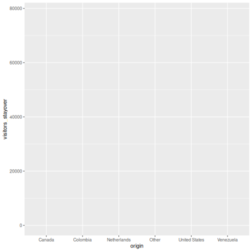
This gives us an empty canvas with axes. Now we add a geometry layer:
R
ggplot(data = visitors, aes(x = origin, y = visitors_stayover)) +
geom_col()
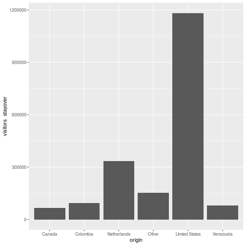
That is already a bar chart. The + operator is how you
add layers — think of it as stacking transparencies on top of each
other.
The + operator vs. the pipe
|>
The pipe |> passes data into a function. The
+ in ggplot2 adds layers to a plot. They look
similar but do different things. A common beginner mistake is using
|> where + is needed:
R
# WRONG --- this will produce an error
ggplot(visitors, aes(x = origin)) |> geom_bar()
# CORRECT
ggplot(visitors, aes(x = origin)) + geom_bar()
Common chart types
Below is a reference table mapping SPSS Chart Builder chart types to their ggplot2 equivalents:
| Chart type | SPSS menu path | ggplot2 geometry |
|---|---|---|
| Bar chart | Graphs > Chart Builder > Bar |
geom_bar() / geom_col()
|
| Histogram | Graphs > Chart Builder > Histogram | geom_histogram() |
| Scatterplot | Graphs > Chart Builder > Scatter/Dot | geom_point() |
| Line chart | Graphs > Chart Builder > Line | geom_line() |
| Boxplot | Graphs > Chart Builder > Boxplot | geom_boxplot() |
Let’s work through each one using the Aruba visitors data.
Bar chart: geom_bar() and geom_col()
There are two bar chart geoms. Use geom_bar() when you
want R to count rows for you, and
geom_col() when you already have the values to
plot.
R
# geom_bar() counts the rows per origin (6 origins x 20 quarters = 20 rows each)
ggplot(visitors, aes(x = origin)) +
geom_bar()
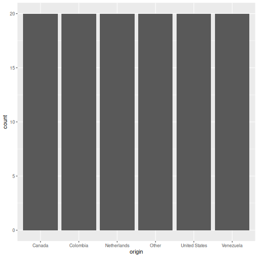
R
# geom_col() uses a pre-computed value on the y-axis
visitors_total <- visitors |>
group_by(origin) |>
summarise(total_stayover = sum(visitors_stayover))
ggplot(visitors_total, aes(x = reorder(origin, -total_stayover),
y = total_stayover)) +
geom_col()

geom_bar()
vs. geom_col() — when to use which?
-
geom_bar()usesstat = "count"by default: it counts how many rows fall into each category. You only need anxaesthetic. -
geom_col()usesstat = "identity": it plots the actual value you supply. You need bothxandy.
In SPSS Chart Builder, when you drag a categorical variable to the
x-axis and a scale variable to the y-axis with “Mean” as the summary,
that is equivalent to first computing the mean with
summarise() and then using geom_col().
Histogram: geom_histogram()
In SPSS: Graphs > Chart Builder, drag a scale variable to the x-axis and select the Histogram type.
R
ggplot(visitors, aes(x = avg_spending_usd)) +
geom_histogram(binwidth = 50, color = "white")
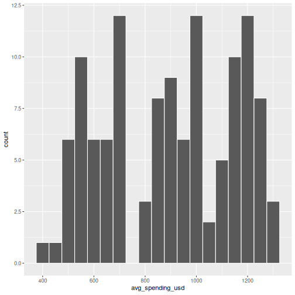
The binwidth argument controls how wide each bin is.
Experiment with different values to see how the shape of the
distribution changes.
Scatterplot: geom_point()
In SPSS: Graphs > Chart Builder, drag variables to x and y axes and select Simple Scatter.
R
ggplot(visitors, aes(x = avg_spending_usd, y = satisfaction_score)) +
geom_point()
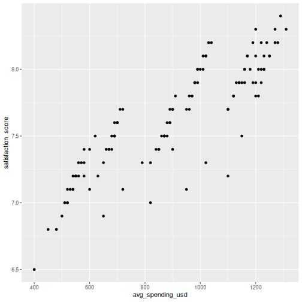
You can map additional variables to aesthetics like color and size:
R
ggplot(visitors, aes(x = avg_spending_usd, y = satisfaction_score,
color = origin)) +
geom_point(size = 2, alpha = 0.7)
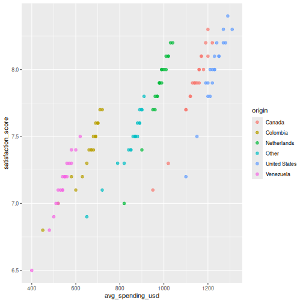
Line chart: geom_line()
Line charts are great for showing trends over time. Let’s compute quarterly totals and plot them:
R
quarterly_totals <- visitors |>
group_by(year, quarter) |>
summarise(total_stayover = sum(visitors_stayover), .groups = "drop") |>
mutate(date_label = paste(year, quarter, sep = "-"))
ggplot(quarterly_totals, aes(x = date_label, y = total_stayover, group = 1)) +
geom_line() +
geom_point()
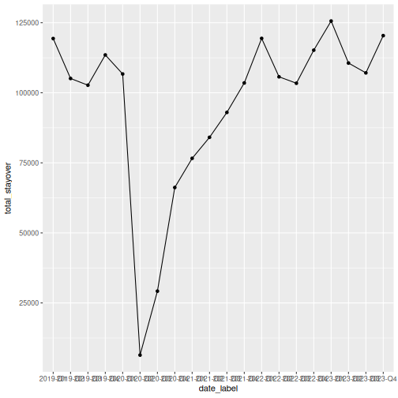
That works, but the x-axis labels overlap. Let’s also see how to plot multiple lines by origin:
R
visitors_by_qtr <- visitors |>
mutate(date_label = paste(year, quarter, sep = "-"))
ggplot(visitors_by_qtr, aes(x = date_label, y = visitors_stayover,
color = origin, group = origin)) +
geom_line() +
theme(axis.text.x = element_text(angle = 45, hjust = 1))
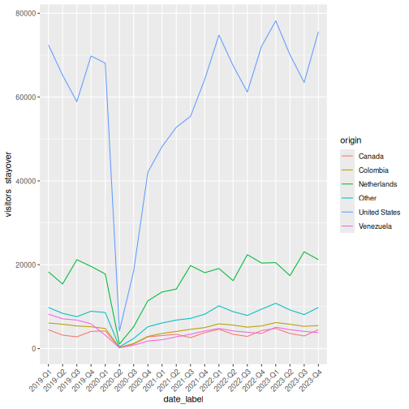
Making it publication-ready
So far our plots have been functional but plain. Let’s take a bar chart through the full journey from basic to polished. This is where ggplot2 truly outshines SPSS Chart Builder — every tweak is a single line of code.
Step 1: Basic chart
R
p <- ggplot(visitors_total, aes(x = reorder(origin, -total_stayover),
y = total_stayover)) +
geom_col()
p
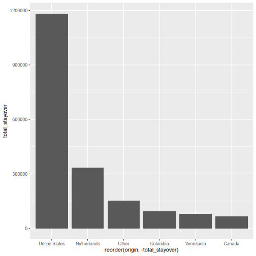
Step 2: Add labels
R
p <- p +
labs(
title = "Stayover Visitors to Aruba by Origin Country",
subtitle = "Total visitors, 2019--2023",
x = "Country of Origin",
y = "Total Stayover Visitors",
caption = "Source: Aruba visitors dataset"
)
p
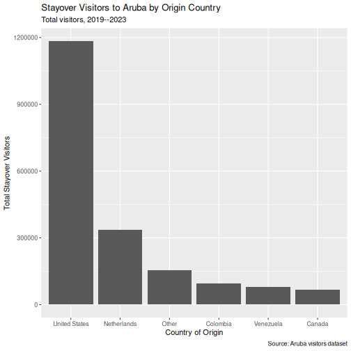
Step 3: Apply a clean theme
R
p <- p + theme_minimal()
p
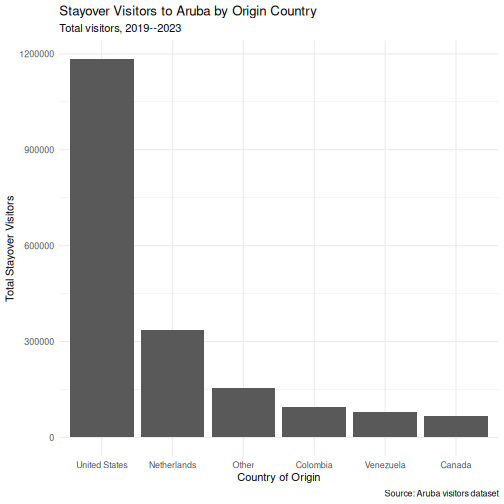
Step 4: Customize colors
R
p <- p +
geom_col(fill = "#2a9d8f") +
theme_minimal(base_size = 13)
p
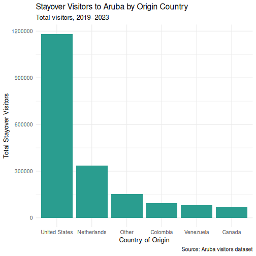
Step 5: Fine-tune text and formatting
R
p <- p +
scale_y_continuous(labels = scales::comma) +
theme(
plot.title = element_text(face = "bold"),
axis.text.x = element_text(angle = 30, hjust = 1)
)
p
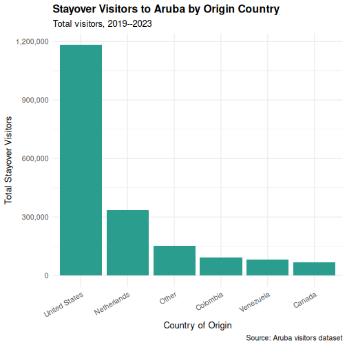
Saving your plot
Use ggsave() to export your plot as a PNG, PDF, or SVG
file:
R
ggsave("my_plot.png", plot = p, width = 8, height = 5, dpi = 300)
In SPSS you right-click the chart and choose Export —
ggsave() gives you precise control over dimensions and
resolution, which is exactly what journals require.
Faceting: small multiples
Faceting is one of ggplot2’s most powerful features and something SPSS Chart Builder handles poorly. Instead of cramming all groups onto one chart, you split the data into panels — one per group.
R
visitors_annual <- visitors |>
group_by(year, origin) |>
summarise(total_stayover = sum(visitors_stayover), .groups = "drop")
ggplot(visitors_annual, aes(x = year, y = total_stayover)) +
geom_line() +
geom_point() +
facet_wrap(~ origin, scales = "free_y") +
labs(
title = "Annual Stayover Visitors by Origin",
x = "Year",
y = "Total Stayover Visitors"
) +
scale_y_continuous(labels = scales::comma) +
theme_minimal()
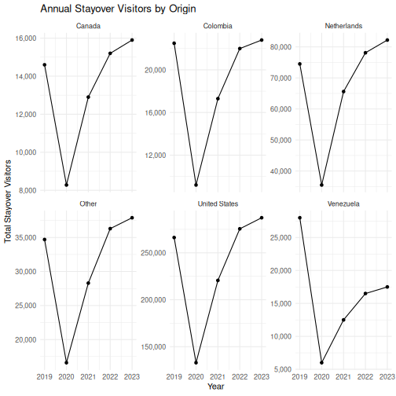
The scales = "free_y" argument lets each panel have its
own y-axis range. This is important when groups have very different
magnitudes (e.g., US visitors vastly outnumber Canadian visitors).
The faceting example is a great place to pause and let learners experiment. Encourage them to try:
-
facet_wrap(~ origin, ncol = 2)to control the layout -
facet_grid(origin ~ .)for a grid arrangement - removing
scales = "free_y"to see the difference
Challenge 1: Build a publication-quality faceted chart
Using the visitors data, create a scatterplot of
avg_spending_usd (x-axis)
vs. satisfaction_score (y-axis), with the following
requirements:
- Color the points by
origin - Add a linear trend line using
geom_smooth(method = "lm") - Facet by
year - Add a proper title, axis labels, and caption
- Use
theme_minimal()and make the title bold
R
ggplot(visitors, aes(x = avg_spending_usd, y = satisfaction_score,
color = origin)) +
geom_point(alpha = 0.7, size = 2) +
geom_smooth(method = "lm", se = FALSE, linewidth = 0.8) +
facet_wrap(~ year) +
labs(
title = "Spending vs. Satisfaction by Origin Country",
subtitle = "Each panel represents one year (2019--2023)",
x = "Average Spending (USD)",
y = "Satisfaction Score (1--10)",
color = "Origin",
caption = "Source: Aruba visitors dataset"
) +
theme_minimal(base_size = 12) +
theme(
plot.title = element_text(face = "bold"),
legend.position = "bottom"
)
OUTPUT
`geom_smooth()` using formula = 'y ~ x'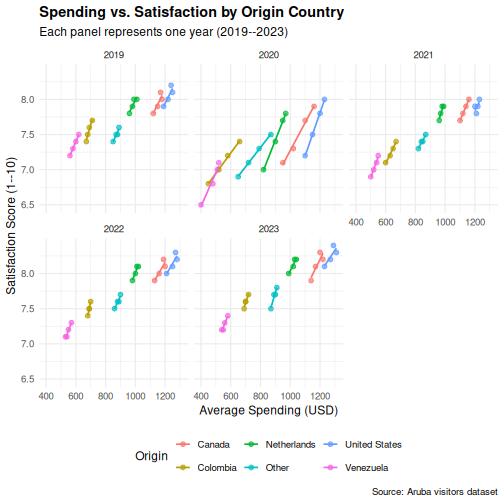
Challenge 2: Recreate an SPSS-style chart
In SPSS, a common chart is a clustered bar chart showing means by
group. Create the R equivalent: a bar chart showing mean
stay-over visitors per quarter for each origin country, with
bars colored by origin. Add error bars using
stat_summary().
Hint: You can use
stat_summary(fun = mean, geom = "col") to compute the mean
within the plot itself, without pre-computing it.
R
ggplot(visitors, aes(x = origin, y = visitors_stayover, fill = origin)) +
stat_summary(fun = mean, geom = "col", width = 0.7) +
stat_summary(fun.data = mean_se, geom = "errorbar", width = 0.3) +
labs(
title = "Mean Quarterly Stayover Visitors by Origin",
x = "Country of Origin",
y = "Mean Stayover Visitors per Quarter"
) +
scale_y_continuous(labels = scales::comma) +
theme_minimal(base_size = 12) +
theme(
plot.title = element_text(face = "bold"),
axis.text.x = element_text(angle = 30, hjust = 1),
legend.position = "none"
)
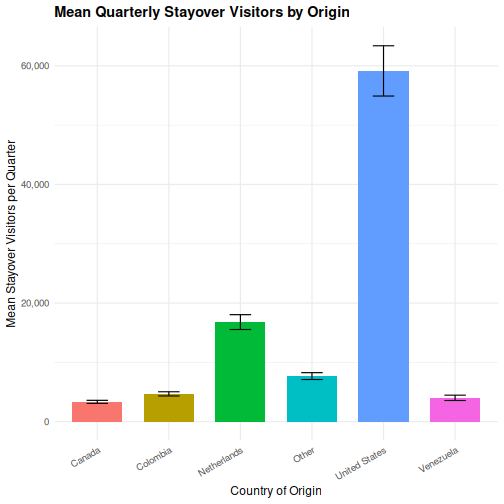
- ggplot2 builds plots in layers: data, aesthetics, geometry, labels, theme
- Every SPSS Chart Builder chart has a ggplot2 equivalent that offers more control
- Faceting (
facet_wrap) lets you create small multiples — something SPSS Chart Builder handles poorly
Content from Statistical Analysis in R
Last updated on 2026-04-11 | Edit this page
Estimated time: 120 minutes
Overview
Questions
- How do I run t-tests, ANOVA, correlations, and regression in R?
- How does R output compare to SPSS output tables?
- How do I extract and report results?
Objectives
- Run independent and paired samples t-tests
- Conduct one-way ANOVA with post-hoc tests
- Calculate correlations and run simple linear regression
- Interpret R output by mapping it to familiar SPSS output tables
From SPSS dialogs to R functions
In SPSS, every statistical test lives behind a menu: Analyze > Compare Means, Analyze > Correlate, and so on. In R, each test is a single function call. The table below maps the SPSS dialogs you already know to their R equivalents:
| Analysis | SPSS menu path | R function |
|---|---|---|
| Independent-samples t-test | Analyze > Compare Means > Independent-Samples T Test | t.test(y ~ group, data = df) |
| Paired-samples t-test | Analyze > Compare Means > Paired-Samples T Test | t.test(x, y, paired = TRUE) |
| One-way ANOVA | Analyze > Compare Means > One-Way ANOVA |
aov(y ~ group, data = df) + summary()
|
| Post-hoc tests | (checkbox in ANOVA dialog) | TukeyHSD() |
| Bivariate correlation | Analyze > Correlate > Bivariate | cor.test(df$x, df$y) |
| Linear regression | Analyze > Regression > Linear |
lm(y ~ x1 + x2, data = df) +
summary()
|
Let’s load our data and packages:
R
library(tidyverse)
library(broom)
visitors <- read_csv("data/aruba_visitors.csv")
T-tests
Independent-samples t-test
In SPSS, you would go to Analyze > Compare Means > Independent-Samples T Test, move your test variable to the “Test Variable(s)” box, move your grouping variable to the “Grouping Variable” box, and define the two groups.
In R, it is one line. Let’s test whether the average spending differs between US and Netherlands visitors:
R
# Filter to just the two groups we want to compare
us_nl <- visitors |>
filter(origin %in% c("United States", "Netherlands"))
# Run the independent-samples t-test
t_result <- t.test(avg_spending_usd ~ origin, data = us_nl)
t_result
OUTPUT
Welch Two Sample t-test
data: avg_spending_usd by origin
t = -16.195, df = 37.99, p-value < 2.2e-16
alternative hypothesis: true difference in means between group Netherlands and group United States is not equal to 0
95 percent confidence interval:
-280.1256 -217.8744
sample estimates:
mean in group Netherlands mean in group United States
978.5 1227.5 Reading the t-test output — SPSS comparison
The R output gives you the same information as the SPSS “Independent Samples Test” table, just arranged differently:
| SPSS output column | R output line |
|---|---|
| t | t = ... |
| df | df = ... |
| Sig. (2-tailed) | p-value = ... |
| Mean Difference | difference in means shown in estimates |
| 95% CI of the Difference | 95 percent confidence interval: |
The key difference: SPSS shows Levene’s test for equality of
variances automatically. R’s t.test() uses the Welch
correction by default (which does not assume equal
variances). This is actually the better default — many statisticians
recommend always using the Welch t-test.
If you need the equal-variances version (the “Equal variances
assumed” row in SPSS), add var.equal = TRUE:
R
t.test(avg_spending_usd ~ origin, data = us_nl, var.equal = TRUE)
Paired-samples t-test
A paired t-test compares two measurements on the same cases. Let’s compare Q1 vs. Q3 hotel occupancy rates (the same hotels measured in different quarters):
R
# Get Q1 and Q3 data for each year
q1_data <- visitors |>
filter(quarter == "Q1") |>
arrange(year, origin) |>
pull(hotel_occupancy_pct)
q3_data <- visitors |>
filter(quarter == "Q3") |>
arrange(year, origin) |>
pull(hotel_occupancy_pct)
# Paired t-test
t.test(q1_data, q3_data, paired = TRUE)
OUTPUT
Paired t-test
data: q1_data and q3_data
t = 3.6602, df = 29, p-value = 0.000998
alternative hypothesis: true mean difference is not equal to 0
95 percent confidence interval:
4.941648 17.458352
sample estimates:
mean difference
11.2 In SPSS this would be Analyze > Compare Means > Paired-Samples T Test, where you select the two variables as a pair.
ANOVA
One-way ANOVA
In SPSS: Analyze > Compare Means > One-Way ANOVA. Move the dependent variable to the “Dependent List” and the factor to “Factor”.
Let’s test whether satisfaction scores differ across origin countries:
R
# Fit the ANOVA model
anova_model <- aov(satisfaction_score ~ origin, data = visitors)
# View the ANOVA table
summary(anova_model)
OUTPUT
Df Sum Sq Mean Sq F value Pr(>F)
origin 5 11.610 2.3220 35.28 <2e-16 ***
Residuals 114 7.502 0.0658
---
Signif. codes: 0 '***' 0.001 '**' 0.01 '*' 0.05 '.' 0.1 ' ' 1Reading the ANOVA table — SPSS comparison
| SPSS output column | R output column |
|---|---|
| Sum of Squares | Sum Sq |
| df | Df |
| Mean Square | Mean Sq |
| F | F value |
| Sig. | Pr(>F) |
The layout is almost identical — R just uses slightly different column names.
Post-hoc tests with TukeyHSD
If the ANOVA is significant, you want to know which groups differ. In SPSS, you check the “Post Hoc” button in the ANOVA dialog and select Tukey. In R:
R
TukeyHSD(anova_model)
OUTPUT
Tukey multiple comparisons of means
95% family-wise confidence level
Fit: aov(formula = satisfaction_score ~ origin, data = visitors)
$origin
diff lwr upr p adj
Colombia-Canada -0.495 -0.7301532 -0.25984681 0.0000002
Netherlands-Canada -0.020 -0.2551532 0.21515319 0.9998728
Other-Canada -0.420 -0.6551532 -0.18484681 0.0000143
United States-Canada 0.100 -0.1351532 0.33515319 0.8199046
Venezuela-Canada -0.755 -0.9901532 -0.51984681 0.0000000
Netherlands-Colombia 0.475 0.2398468 0.71015319 0.0000007
Other-Colombia 0.075 -0.1601532 0.31015319 0.9394347
United States-Colombia 0.595 0.3598468 0.83015319 0.0000000
Venezuela-Colombia -0.260 -0.4951532 -0.02484681 0.0211495
Other-Netherlands -0.400 -0.6351532 -0.16484681 0.0000408
United States-Netherlands 0.120 -0.1151532 0.35515319 0.6781085
Venezuela-Netherlands -0.735 -0.9701532 -0.49984681 0.0000000
United States-Other 0.520 0.2848468 0.75515319 0.0000001
Venezuela-Other -0.335 -0.5701532 -0.09984681 0.0009635
Venezuela-United States -0.855 -1.0901532 -0.61984681 0.0000000This gives you pairwise comparisons with adjusted p-values, the difference in means, and 95% confidence intervals — the same information as the SPSS “Multiple Comparisons” table.
You can also visualize the post-hoc results:
R
plot(TukeyHSD(anova_model), las = 1, cex.axis = 0.7)
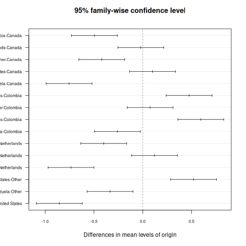
Correlation
In SPSS: Analyze > Correlate > Bivariate. Move variables to the “Variables” box and select Pearson, Spearman, or both.
Let’s test the correlation between average spending and satisfaction:
R
cor.test(visitors$avg_spending_usd, visitors$satisfaction_score)
OUTPUT
Pearson's product-moment correlation
data: visitors$avg_spending_usd and visitors$satisfaction_score
t = 18.69, df = 118, p-value < 2.2e-16
alternative hypothesis: true correlation is not equal to 0
95 percent confidence interval:
0.8110127 0.9037614
sample estimates:
cor
0.8645736 Reading correlation output — SPSS comparison
| SPSS output | R output |
|---|---|
| Pearson Correlation |
cor (the estimate at the end) |
| Sig. (2-tailed) | p-value |
| N | shown in the data, not in output |
| 95% CI | 95 percent confidence interval |
One advantage of R: cor.test() gives you a confidence
interval for the correlation by default. SPSS does not show this unless
you use syntax.
For a correlation matrix of multiple variables (like the SPSS
correlation table), use cor():
R
visitors |>
select(visitors_stayover, avg_stay_nights, avg_spending_usd,
hotel_occupancy_pct, satisfaction_score) |>
cor(use = "complete.obs") |>
round(3)
OUTPUT
visitors_stayover avg_stay_nights avg_spending_usd
visitors_stayover 1.000 0.276 0.622
avg_stay_nights 0.276 1.000 0.597
avg_spending_usd 0.622 0.597 1.000
hotel_occupancy_pct 0.231 0.166 0.206
satisfaction_score 0.589 0.674 0.865
hotel_occupancy_pct satisfaction_score
visitors_stayover 0.231 0.589
avg_stay_nights 0.166 0.674
avg_spending_usd 0.206 0.865
hotel_occupancy_pct 1.000 0.575
satisfaction_score 0.575 1.000Linear regression
In SPSS: Analyze > Regression > Linear. Move the dependent variable to “Dependent” and independent variables to “Independent(s)”.
Let’s predict average spending from stay nights and origin country:
R
reg_model <- lm(avg_spending_usd ~ avg_stay_nights + origin, data = visitors)
summary(reg_model)
OUTPUT
Call:
lm(formula = avg_spending_usd ~ avg_stay_nights + origin, data = visitors)
Residuals:
Min 1Q Median 3Q Max
-112.239 -7.704 2.216 12.417 58.083
Coefficients:
Estimate Std. Error t value Pr(>|t|)
(Intercept) 234.210 33.037 7.089 1.24e-10 ***
avg_stay_nights 134.943 4.879 27.659 < 2e-16 ***
originColombia -184.753 12.670 -14.582 < 2e-16 ***
originNetherlands -619.305 17.829 -34.737 < 2e-16 ***
originOther -88.610 9.756 -9.082 4.05e-15 ***
originUnited States 114.139 6.600 17.294 < 2e-16 ***
originVenezuela -273.788 13.452 -20.354 < 2e-16 ***
---
Signif. codes: 0 '***' 0.001 '**' 0.01 '*' 0.05 '.' 0.1 ' ' 1
Residual standard error: 20.66 on 113 degrees of freedom
Multiple R-squared: 0.9937, Adjusted R-squared: 0.9933
F-statistic: 2962 on 6 and 113 DF, p-value: < 2.2e-16Reading regression output — SPSS comparison
The summary() output contains everything from the SPSS
regression output tables, but in a more compact format:
| SPSS table | R output section |
|---|---|
| Model Summary (R-sq) |
Multiple R-squared, Adjusted R-squared at
the bottom |
| ANOVA table (F-test) |
F-statistic at the very bottom |
| Coefficients table | The Coefficients: section |
| B (unstandardized) |
Estimate column |
| Std. Error |
Std. Error column |
| t |
t value column |
| Sig. |
Pr(>|t|) column |
Note: R does not give you standardized coefficients
(Beta) by default. To get those, scale your variables first with
scale(), or use the lm.beta package.
Reading R output with broom::tidy()
The raw R output is fine for interactive exploration, but it is hard
to export or combine with other results. The broom package
converts statistical output into tidy data frames — one row per term,
columns for estimate, standard error, test statistic, and p-value.
R
# Tidy the t-test result
tidy(t_result)
OUTPUT
# A tibble: 1 × 10
estimate estimate1 estimate2 statistic p.value parameter conf.low conf.high
<dbl> <dbl> <dbl> <dbl> <dbl> <dbl> <dbl> <dbl>
1 -249 978. 1228. -16.2 1.21e-18 38.0 -280. -218.
# ℹ 2 more variables: method <chr>, alternative <chr>R
# Tidy the regression coefficients
tidy(reg_model)
OUTPUT
# A tibble: 7 × 5
term estimate std.error statistic p.value
<chr> <dbl> <dbl> <dbl> <dbl>
1 (Intercept) 234. 33.0 7.09 1.24e-10
2 avg_stay_nights 135. 4.88 27.7 3.93e-52
3 originColombia -185. 12.7 -14.6 9.90e-28
4 originNetherlands -619. 17.8 -34.7 3.86e-62
5 originOther -88.6 9.76 -9.08 4.05e-15
6 originUnited States 114. 6.60 17.3 1.56e-33
7 originVenezuela -274. 13.5 -20.4 1.35e-39R
# Get model-level statistics (R-squared, F, etc.)
glance(reg_model)
OUTPUT
# A tibble: 1 × 12
r.squared adj.r.squared sigma statistic p.value df logLik AIC BIC
<dbl> <dbl> <dbl> <dbl> <dbl> <dbl> <dbl> <dbl> <dbl>
1 0.994 0.993 20.7 2962. 8.91e-122 6 -530. 1076. 1098.
# ℹ 3 more variables: deviance <dbl>, df.residual <int>, nobs <int>The tidy() output is a regular data frame, which means
you can filter it, arrange it, or export it to CSV — something that is
surprisingly difficult with SPSS output. This is extremely useful for
reporting: you can extract exactly the numbers you need and drop them
into a table or a plot.
This is a good time to reinforce the reproducibility advantage. In SPSS, if a reviewer asks you to re-run an analysis with a different subset, you have to click through the dialogs again. In R, you change one line of code and re-run the script.
Emphasize that broom::tidy() produces a data frame —
this means students can use all the dplyr verbs they learned in Episode
3 on their statistical results (filtering significant results, arranging
by p-value, etc.).
A complete analysis workflow
Let’s put everything together in a workflow that mirrors what you would do in SPSS, but entirely in code. Our research question: Does average spending differ by origin country, and what predicts higher spending?
R
# Step 1: Descriptive statistics by group
visitors |>
group_by(origin) |>
summarise(
n = n(),
mean_spending = mean(avg_spending_usd),
sd_spending = sd(avg_spending_usd),
mean_satisfaction = mean(satisfaction_score)
) |>
arrange(desc(mean_spending))
OUTPUT
# A tibble: 6 × 5
origin n mean_spending sd_spending mean_satisfaction
<chr> <int> <dbl> <dbl> <dbl>
1 United States 20 1228. 48.2 8.00
2 Canada 20 1139 63.0 7.90
3 Netherlands 20 978. 49.0 7.88
4 Other 20 850 64.2 7.48
5 Colombia 20 654 68.6 7.4
6 Venezuela 20 540 46.9 7.14R
# Step 2: Visualize the distribution
ggplot(visitors, aes(x = reorder(origin, avg_spending_usd, FUN = median),
y = avg_spending_usd)) +
geom_boxplot(fill = "#2a9d8f", alpha = 0.6) +
labs(title = "Average Spending by Origin Country",
x = "Country of Origin",
y = "Average Spending (USD)") +
theme_minimal()
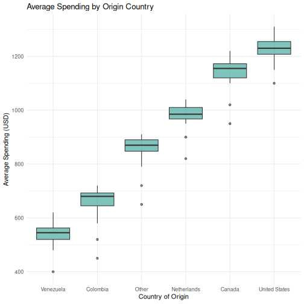
R
# Step 3: ANOVA --- is there a significant difference?
spending_anova <- aov(avg_spending_usd ~ origin, data = visitors)
summary(spending_anova)
OUTPUT
Df Sum Sq Mean Sq F value Pr(>F)
origin 5 7262707 1452541 441.7 <2e-16 ***
Residuals 114 374890 3289
---
Signif. codes: 0 '***' 0.001 '**' 0.01 '*' 0.05 '.' 0.1 ' ' 1R
# Step 4: Post-hoc --- which groups differ?
tukey_results <- TukeyHSD(spending_anova)
tidy(tukey_results) |>
filter(adj.p.value < 0.05) |>
arrange(adj.p.value)
OUTPUT
# A tibble: 15 × 7
term contrast null.value estimate conf.low conf.high adj.p.value
<chr> <chr> <dbl> <dbl> <dbl> <dbl> <dbl>
1 origin Colombia-Canada 0 -485 -538. -432. 2.43e-14
2 origin Other-Canada 0 -289 -342. -236. 2.43e-14
3 origin Venezuela-Canada 0 -599 -652. -546. 2.43e-14
4 origin Netherlands-Colomb… 0 324. 272. 377. 2.43e-14
5 origin United States-Colo… 0 573. 521. 626. 2.43e-14
6 origin United States-Neth… 0 249. 196. 302. 2.43e-14
7 origin Venezuela-Netherla… 0 -438. -491. -386. 2.43e-14
8 origin United States-Other 0 377. 325. 430. 2.43e-14
9 origin Venezuela-Other 0 -310 -363. -257. 2.43e-14
10 origin Venezuela-United S… 0 -687. -740. -635. 2.43e-14
11 origin Other-Colombia 0 196 143. 249. 6.49e-14
12 origin Netherlands-Canada 0 -161. -213. -108. 2.75e-13
13 origin Other-Netherlands 0 -128. -181. -75.9 1.83e- 9
14 origin Venezuela-Colombia 0 -114. -167. -61.4 9.17e- 8
15 origin United States-Cana… 0 88.5 35.9 141. 5.04e- 5R
# Step 5: Regression --- what predicts spending?
spending_model <- lm(avg_spending_usd ~ avg_stay_nights + origin + year,
data = visitors)
tidy(spending_model) |>
mutate(across(where(is.numeric), ~ round(., 3)))
OUTPUT
# A tibble: 8 × 5
term estimate std.error statistic p.value
<chr> <dbl> <dbl> <dbl> <dbl>
1 (Intercept) -7888. 2707. -2.91 0.004
2 avg_stay_nights 131. 4.92 26.6 0
3 originColombia -194. 12.6 -15.4 0
4 originNetherlands -605. 17.9 -33.9 0
5 originOther -94.8 9.65 -9.82 0
6 originUnited States 113. 6.38 17.8 0
7 originVenezuela -284. 13.4 -21.1 0
8 year 4.03 1.34 3 0.003R
# Step 6: Model fit
glance(spending_model) |>
select(r.squared, adj.r.squared, p.value, AIC)
OUTPUT
# A tibble: 1 × 4
r.squared adj.r.squared p.value AIC
<dbl> <dbl> <dbl> <dbl>
1 0.994 0.994 6.69e-122 1069.This entire analysis — from descriptives to regression — is captured in a script that you can re-run at any time. If your data updates or a reviewer requests changes, you modify the code and run it again. No clicking through dialog boxes.
Challenge 1: Complete analysis workflow
Conduct a full analysis to answer this question: Do satisfaction scores differ between high-season (Q1 and Q4) and low-season (Q2 and Q3) quarters?
Your workflow should include:
- Create a new variable
seasonthat classifies Q1/Q4 as “High” and Q2/Q3 as “Low” - Compute descriptive statistics (mean and SD of
satisfaction_score) for each season - Create a boxplot comparing satisfaction scores by season
- Run an independent-samples t-test
- Use
broom::tidy()to extract the results into a clean table
R
# Step 1: Create the season variable
visitors_season <- visitors |>
mutate(season = if_else(quarter %in% c("Q1", "Q4"), "High", "Low"))
# Step 2: Descriptive statistics
visitors_season |>
group_by(season) |>
summarise(
n = n(),
mean_satisfaction = mean(satisfaction_score),
sd_satisfaction = sd(satisfaction_score)
)
OUTPUT
# A tibble: 2 × 4
season n mean_satisfaction sd_satisfaction
<chr> <int> <dbl> <dbl>
1 High 60 7.71 0.382
2 Low 60 7.55 0.405R
# Step 3: Boxplot
ggplot(visitors_season, aes(x = season, y = satisfaction_score,
fill = season)) +
geom_boxplot(alpha = 0.7) +
labs(
title = "Satisfaction Scores: High vs. Low Season",
x = "Season",
y = "Satisfaction Score"
) +
theme_minimal() +
theme(legend.position = "none")
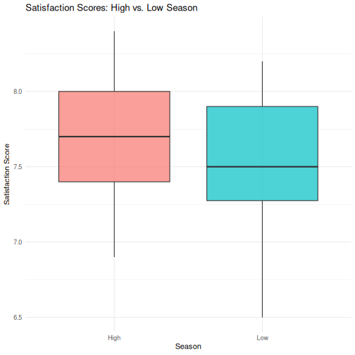
R
# Step 4: T-test
season_t <- t.test(satisfaction_score ~ season, data = visitors_season)
season_t
OUTPUT
Welch Two Sample t-test
data: satisfaction_score by season
t = 2.3194, df = 117.6, p-value = 0.0221
alternative hypothesis: true difference in means between group High and group Low is not equal to 0
95 percent confidence interval:
0.02436478 0.30896855
sample estimates:
mean in group High mean in group Low
7.713333 7.546667 R
# Step 5: Tidy results
tidy(season_t)
OUTPUT
# A tibble: 1 × 10
estimate estimate1 estimate2 statistic p.value parameter conf.low conf.high
<dbl> <dbl> <dbl> <dbl> <dbl> <dbl> <dbl> <dbl>
1 0.167 7.71 7.55 2.32 0.0221 118. 0.0244 0.309
# ℹ 2 more variables: method <chr>, alternative <chr>Challenge 2: Correlation and regression
Investigate the relationship between avg_stay_nights and
avg_spending_usd:
- Run
cor.test()to get the Pearson correlation and p-value - Create a scatterplot with a linear trend line
(
geom_smooth(method = "lm")) - Fit a linear regression predicting
avg_spending_usdfromavg_stay_nights - Use
tidy()andglance()to extract the results - Interpret: for each additional night of stay, how much does spending increase?
R
# Step 1: Correlation
cor.test(visitors$avg_stay_nights, visitors$avg_spending_usd)
OUTPUT
Pearson's product-moment correlation
data: visitors$avg_stay_nights and visitors$avg_spending_usd
t = 8.0872, df = 118, p-value = 6.065e-13
alternative hypothesis: true correlation is not equal to 0
95 percent confidence interval:
0.4680186 0.7013374
sample estimates:
cor
0.5971648 R
# Step 2: Scatterplot
ggplot(visitors, aes(x = avg_stay_nights, y = avg_spending_usd)) +
geom_point(aes(color = origin), alpha = 0.7, size = 2) +
geom_smooth(method = "lm", color = "black", linewidth = 0.8) +
labs(
title = "Relationship Between Length of Stay and Spending",
x = "Average Stay (Nights)",
y = "Average Spending (USD)",
color = "Origin"
) +
theme_minimal()
OUTPUT
`geom_smooth()` using formula = 'y ~ x'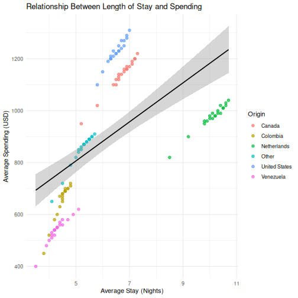
R
# Step 3: Regression
stay_model <- lm(avg_spending_usd ~ avg_stay_nights, data = visitors)
# Step 4: Extract results
tidy(stay_model)
OUTPUT
# A tibble: 2 × 5
term estimate std.error statistic p.value
<chr> <dbl> <dbl> <dbl> <dbl>
1 (Intercept) 430. 60.8 7.07 1.16e-10
2 avg_stay_nights 75.3 9.31 8.09 6.06e-13R
glance(stay_model)
OUTPUT
# A tibble: 1 × 12
r.squared adj.r.squared sigma statistic p.value df logLik AIC BIC
<dbl> <dbl> <dbl> <dbl> <dbl> <dbl> <dbl> <dbl> <dbl>
1 0.357 0.351 204. 65.4 6.06e-13 1 -807. 1621. 1629.
# ℹ 3 more variables: deviance <dbl>, df.residual <int>, nobs <int>R
# Step 5: Interpretation
# The coefficient for avg_stay_nights tells us:
# for each additional night of stay, average spending increases by
# approximately the "estimate" value in USD, holding all else constant.
- Every SPSS statistical test has a direct R equivalent, usually in a single function call
- R output is more compact than SPSS —
broom::tidy()converts it to a clean table - The workflow in R is: load data, run test, extract results, visualize — all in a script
Content from Reproducible Reporting
Last updated on 2026-04-11 | Edit this page
Estimated time: 60 minutes
Overview
Questions
- How do I combine my analysis and write-up in one document?
- What is R Markdown and why is it better than copy-pasting from SPSS output?
- How do I create a report that updates when data changes?
Objectives
- Create an R Markdown document that combines text, code, and output
- Generate tables and figures that update automatically
- Export reports to Word, PDF, or HTML
- Understand why script-based reporting is more reliable than SPSS output export
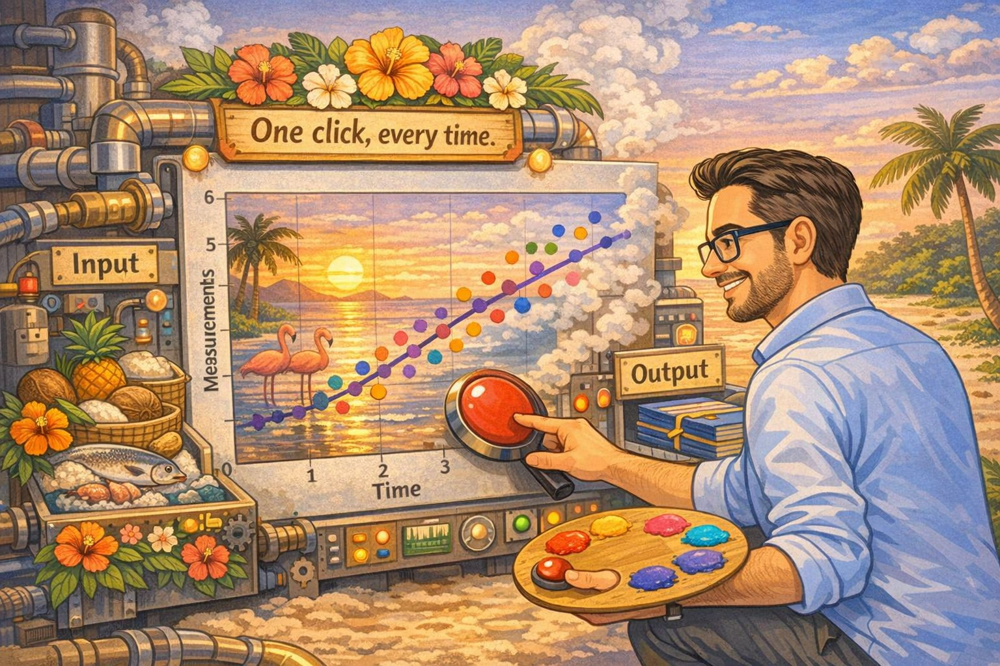
The problem with copy-paste
If you have used SPSS for reporting, this workflow will feel very familiar:
- Run your analysis in SPSS
- Get a table or chart in the Output window
- Copy it
- Paste it into your Word document
- Write your interpretation around it
- Your supervisor / colleague sends updated data
- Go back to step 1 and redo everything
This copy-paste workflow is fragile. Every time the data changes, you need to re-run every analysis, re-copy every table, and re-paste into your document. Along the way, it is easy to accidentally paste an old table, forget to update a number in the text, or lose track of which version of the analysis matches your report.
R Markdown solves this problem. It lets you write your text and your analysis in a single file. When the data changes, you press one button and the entire report — text, tables, figures, and all the numbers in your sentences — updates automatically.
This is not just convenience — it is research integrity
When your numbers and your text live in the same document, it is physically impossible for them to get out of sync. This matters for policy reports, academic papers, and any situation where someone else relies on your numbers.
R Markdown basics
An R Markdown file is a plain text file with the extension
.Rmd. It has three types of content:
- A YAML header at the top (metadata about the document)
- Markdown text (your writing)
- Code chunks (your R analysis)
Let us look at each one.
The YAML header
Every R Markdown document starts with a block between
--- lines. This is the YAML header, and it controls the
document settings:
---
title: "Aruba Tourism Analysis Q1 2023"
author: "Your Name"
date: "2026-04-22"
output: word_document
---The output line controls the format of your final
document:
| Output format | What you get |
|---|---|
word_document |
A .docx Word file |
html_document |
A web page |
pdf_document |
A PDF (requires LaTeX) |
For most government and policy work, word_document is
the most practical choice — your colleagues can open it, comment on it,
and print it without installing anything.
Start with Word, explore later
We recommend word_document for this course because it
fits the workflow most SPSS users already have. Once you are
comfortable, try html_document — it supports interactive
tables and plots.
Markdown text formatting
Between your code chunks, you write normal text using Markdown — a simple way to format text with plain characters. Here are the essentials:
# First-level heading
## Second-level heading
### Third-level heading
**bold text**
*italic text*
- Bullet point one
- Bullet point two
1. Numbered item one
2. Numbered item two
[Link text](https://example.com)That is all you need for most reports. If you have used WhatsApp or Slack formatting, this will feel familiar.
Code chunks
A code chunk is where your R code lives. It starts with
```{r} and ends with ```:
```{r}
library(tidyverse)
visitors <- read_csv("data/aruba_visitors.csv")
summary(visitors$visitors_stayover)
```When you knit the document, R runs the code and places the output directly into your report. No copying, no pasting.
Chunk options
You can control what appears in the final document by adding options to the chunk header:
```{r, echo = FALSE, message = FALSE, warning = FALSE}
library(tidyverse)
visitors <- read_csv("data/aruba_visitors.csv")
```| Option | What it does |
|---|---|
echo = FALSE |
Hides the code, shows only the output |
message = FALSE |
Suppresses package loading messages |
warning = FALSE |
Suppresses warnings |
eval = FALSE |
Shows the code but does not run it |
fig.width = 8 |
Sets figure width in inches |
fig.height = 5 |
Sets figure height in inches |
For a polished report aimed at a non-technical audience, you will
typically set echo = FALSE so readers see results but not
code.
Inline R code
This is the feature that makes R Markdown truly powerful. You can embed R calculations directly inside your sentences:
The dataset contains `r nrow(visitors)` observations.When knitted, this becomes:
The dataset contains 168 observations.
If the data changes and you re-knit, that number updates automatically. No more manually searching through your Word document to find every number that needs updating.
Knitting: from .Rmd to a finished document
To turn your .Rmd file into a Word document (or HTML, or
PDF), you knit it. In RStudio:
- Click the Knit button at the top of the editor (the ball of yarn icon)
- R runs all your code chunks from top to bottom in a clean environment
- The finished document appears
The most common issue learners face is that knitting fails because
the .Rmd file does not load packages or data that earlier
chunks depend on. Remind participants that knitting starts from a
blank environment — every package and dataset must be
loaded within the .Rmd file itself, even if it is already
loaded in their current R session.
Another common issue: file paths. If participants use
read_csv("data/aruba_visitors.csv"), the working directory
during knitting is the folder where the .Rmd file is saved.
Make sure the data file is in the right relative location.
Knitting runs everything fresh
A common mistake is to rely on objects you created in your R console
but never included in the .Rmd file. When you knit, R
starts with a completely empty workspace. If you get an error like
“object not found,” it usually means you forgot to include the code that
creates that object in your .Rmd file.
Building a mini-report
Let us build a short tourism analysis report step by step. In RStudio:
- Go to File > New File > R Markdown…
- Enter a title like “Aruba Tourism Report”
- Enter your name as author
- Select Word as the default output format
- Click OK
RStudio gives you a template document. Delete everything below the YAML header and replace it with the following sections.
Step 1: Setup chunk
The first code chunk in any report should load your packages and data. We hide the code and messages because the reader does not need to see them.
R
# This would be at the top of your .Rmd file (after the YAML header):
# ```{r setup, message = FALSE, warning = FALSE, echo = FALSE}
library(tidyverse)
visitors <- read_csv("data/aruba_visitors.csv")
# ```
Step 2: Write an introduction in Markdown
Below the setup chunk, write some context in plain Markdown:
## Introduction
This report summarizes visitor arrivals to Aruba for the period
2019--2023. Data are drawn from quarterly records of stay-over
and cruise visitors by country of origin.Step 3: A summary table
Now add a code chunk that produces a summary table. The
knitr::kable() function turns a data frame into a nicely
formatted table in your output document:
R
visitors <- read_csv("data/aruba_visitors.csv")
ERROR
Error in `read_csv()`:
! could not find function "read_csv"R
annual_summary <- visitors |>
group_by(year) |>
summarise(
total_stayover = sum(visitors_stayover),
total_cruise = sum(visitors_cruise),
avg_spending = round(mean(avg_spending_usd), 0),
avg_satisfaction = round(mean(satisfaction_score), 1)
)
ERROR
Error in `summarise()`:
! could not find function "summarise"R
knitr::kable(annual_summary, col.names = c(
"Year", "Stay-over Visitors", "Cruise Visitors",
"Avg Spending (USD)", "Avg Satisfaction"
))
ERROR
Error:
! object 'annual_summary' not foundStep 4: A visualization
Add another chunk with a ggplot2 chart:
R
visitors <- read_csv("data/aruba_visitors.csv")
ERROR
Error in `read_csv()`:
! could not find function "read_csv"R
annual_stayover <- visitors |>
group_by(year) |>
summarise(total_stayover = sum(visitors_stayover))
ERROR
Error in `summarise()`:
! could not find function "summarise"R
ggplot(annual_stayover, aes(x = year, y = total_stayover)) +
geom_col(fill = "#2c7bb6") +
scale_y_continuous(labels = scales::comma) +
labs(
title = "Total Stay-over Visitors to Aruba by Year",
x = "Year",
y = "Stay-over visitors"
) +
theme_minimal()
ERROR
Error in `ggplot()`:
! could not find function "ggplot"Step 5: Interpretation with inline R
Now write a paragraph that uses inline R to insert numbers directly:
ERROR
Error in `read_csv()`:
! could not find function "read_csv"ERROR
Error in `summarise()`:
! could not find function "summarise"ERROR
Error:
! object 'annual_stayover' not foundERROR
Error:
! object 'annual_stayover' not foundIn your .Rmd file, you would write something like
this:
The strongest year for stay-over tourism was `r best_year$year`,
with `r scales::comma(best_year$total_stayover)` visitors.
The weakest year was `r worst_year$year`, with
`r scales::comma(worst_year$total_stayover)` visitors.When knitted, this becomes a complete sentence with real numbers — numbers that update automatically if the data ever changes.
Step 6: Knit
Click the Knit button. RStudio generates a Word document with your introduction, table, chart, and interpretation — all in one step, all from one file.
Compare this to the SPSS workflow
Think about what you just did: you loaded data, computed a summary, created a chart, and wrote an interpretation with automatically-calculated numbers — all in a single file. If the data file is updated next quarter, you re-knit and the entire report updates. No manual copy-paste. No version confusion.
A complete example
Here is what a minimal but complete .Rmd file looks
like, all in one place:
---
title: "Aruba Tourism Quarterly Report"
author: "Your Name"
date: "`r Sys.Date()`"
output: word_document
---
```{r setup, message = FALSE, warning = FALSE, echo = FALSE}
library(tidyverse)
visitors <- read_csv("data/aruba_visitors.csv")
```
## Overview
This report summarizes Aruba visitor statistics for 2019--2023.
```{r summary-table, echo = FALSE}
annual <- visitors |>
group_by(year) |>
summarise(
stayover = sum(visitors_stayover),
cruise = sum(visitors_cruise)
)
knitr::kable(annual, col.names = c("Year", "Stay-over", "Cruise"))
```
```{r trend-chart, echo = FALSE, fig.width = 7, fig.height = 4}
ggplot(annual, aes(x = year, y = stayover)) +
geom_line(linewidth = 1, colour = "#2c7bb6") +
geom_point(size = 3, colour = "#2c7bb6") +
scale_y_continuous(labels = scales::comma) +
labs(title = "Stay-over Visitors by Year", x = "Year", y = "Visitors") +
theme_minimal()
```
## Key Findings
```{r findings, echo = FALSE}
latest <- annual |> filter(year == max(year))
previous <- annual |> filter(year == max(year) - 1)
change_pct <- round((latest$stayover - previous$stayover) /
previous$stayover * 100, 1)
```
In `r latest$year`, Aruba received
`r scales::comma(latest$stayover)` stay-over visitors, a
`r change_pct`% change compared to the previous year.Challenge 1: Create a tourism report
Create a new R Markdown document (File > New File > R Markdown) and build a short report that does the following:
- Loads
data/aruba_visitors.csv - Produces a summary table showing average spending and
satisfaction by country of origin (using
knitr::kable()) - Creates a bar chart of average spending by origin
- Includes at least one inline R value in a written interpretation sentence (for example, which origin market has the highest average spending)
- Knits to Word
Here is one way to approach it. Your file would look like this:
---
title: "Aruba Visitor Spending by Origin"
author: "Your Name"
date: "`r Sys.Date()`"
output: word_document
---
```{r setup, message = FALSE, warning = FALSE, echo = FALSE}
library(tidyverse)
visitors <- read_csv("data/aruba_visitors.csv")
```
## Visitor Spending by Country of Origin
```{r origin-table, echo = FALSE}
origin_summary <- visitors |>
group_by(origin) |>
summarise(
avg_spending = round(mean(avg_spending_usd), 0),
avg_satisfaction = round(mean(satisfaction_score), 1)
) |>
arrange(desc(avg_spending))
knitr::kable(origin_summary, col.names = c(
"Origin", "Avg Spending (USD)", "Avg Satisfaction"
))
```
```{r origin-chart, echo = FALSE, fig.width = 7, fig.height = 4}
ggplot(origin_summary, aes(x = reorder(origin, avg_spending),
y = avg_spending)) +
geom_col(fill = "#2c7bb6") +
coord_flip() +
labs(
title = "Average Visitor Spending by Country of Origin",
x = "Country of Origin",
y = "Average Spending (USD)"
) +
theme_minimal()
```
## Interpretation
```{r top-spender, echo = FALSE}
top <- origin_summary |> slice(1)
```
The highest-spending visitor segment is from `r top$origin`,
with an average spend of $`r top$avg_spending` USD per trip.
This group also has an average satisfaction score of
`r top$avg_satisfaction` out of 10.- R Markdown combines your analysis and write-up in a single document
- When data changes, re-knitting updates every table and figure automatically
- You can output to Word, PDF, or HTML from the same source file
- This eliminates the copy-paste errors that are common with SPSS output
Content from Where to Go from Here
Last updated on 2026-04-11 | Edit this page
Estimated time: 45 minutes
Overview
Questions
- Where do I find help when I get stuck?
- What resources are available for continued learning?
- How do I access Dutch Caribbean data directly from R?
Objectives
- Know where to find help: documentation, community forums, Stack Overflow
- Access Dutch Caribbean data using R packages (cbsodataR, WDI)
- Build a personal library of R scripts that replace SPSS workflows
- Understand the Carpentries community and further learning paths

Getting help
Everyone gets stuck. The difference between a beginner and an experienced R user is not that experienced users never see errors — it is that they know where to look when they do. Here are the most useful help resources, in order of how quickly they give you an answer.
Built-in documentation
Every R function has a help page. Access it in two ways:
R
# These two are equivalent:
?mean
help("mean")
The help page shows what arguments the function takes, what it returns, and usually includes examples at the bottom. The examples are often the most useful part — scroll down to them first.
Tip: run the examples
At the bottom of most help pages there is an “Examples” section. You can run all of them at once with:
R
example(mean)
This is a fast way to see what a function does without reading the full documentation.
Posit cheat sheets
Posit (the company behind RStudio) publishes excellent two-page cheat sheets for the most popular packages. Print these out or keep them open on a second screen:
-
Data import:
readr,readxl -
Data transformation:
dplyr -
Visualization:
ggplot2 - R Markdown
Find them all at: https://posit.co/resources/cheatsheets/
Stack Overflow
Stack Overflow has a massive collection of R questions and answers.
When searching, add [r] to your search to filter for
R-specific content:
site:stackoverflow.com [r] how to rename columns dplyrBefore posting your own question, search first — most beginner questions have already been answered. When you do post, include a minimal reproducible example (a small piece of code that someone else can run to see your problem).
Posit Community
The Posit Community forum (https://community.rstudio.com) is a friendlier, more focused alternative to Stack Overflow. It is specifically for R and RStudio questions, and the community is welcoming to beginners.
R-bloggers
R-bloggers aggregates hundreds of R blogs. It is a great place to discover tutorials, new packages, and practical examples. You can subscribe to the email newsletter to get a daily digest.
Dutch Caribbean data in R
One of the practical advantages of R over SPSS is that you can pull
data directly from online sources into your R session — no manual
downloads, no saving .sav files. Here are three sources
especially relevant to the Dutch Caribbean.
CBS Netherlands with cbsodataR
The cbsodataR package connects directly to CBS
(Statistics Netherlands) StatLine, which includes data for the BES
islands (Bonaire, Sint Eustatius, Saba) and sometimes Aruba, Curacao,
and Sint Maarten.
R
# Install the package (only needed once):
install.packages("cbsodataR")
R
library(cbsodataR)
# Browse available tables (there are thousands):
tables <- cbs_get_datasets()
# Search for Caribbean Netherlands tables:
caribbean_tables <- tables |>
dplyr::filter(grepl("Caribisch|Caribbean|Bonaire", Title, ignore.case = TRUE))
# View what we found:
head(caribbean_tables[, c("Identifier", "Title")], 10)
Once you find a table of interest, you can download it directly:
R
# Example: population data for Caribbean Netherlands
# (Check cbs_get_datasets() for current table identifiers)
pop_data <- cbs_get_data("83698ENG")
head(pop_data)
Finding the right table
CBS has thousands of tables, and the identifiers (like “83698ENG”) change over time. The safest approach is to:
- Search on opendata.cbs.nl in your browser
- Find the table you want
- Copy the identifier from the URL
- Use that identifier in
cbs_get_data()
World Bank data with WDI
The WDI package pulls data from the World Bank’s World
Development Indicators. This is excellent for comparing Aruba, Curacao,
and Sint Maarten to other small island states.
R
# Install the package (only needed once):
install.packages("WDI")
Here is a working example that pulls GDP per capita data for Aruba:
R
library(WDI)
# Pull GDP per capita (current US$) for Aruba
# Country code for Aruba is "ABW"
aruba_gdp <- WDI(
country = "ABW",
indicator = "NY.GDP.PCAP.CD",
start = 2000,
end = 2023
)
# Clean up column names
names(aruba_gdp)[names(aruba_gdp) == "NY.GDP.PCAP.CD"] <- "gdp_per_capita"
# Show the most recent years
tail(aruba_gdp[, c("year", "gdp_per_capita")], 10)
OUTPUT
year gdp_per_capita
15 2009 25134.77
16 2008 28171.91
17 2007 26736.31
18 2006 24845.66
19 2005 24171.84
20 2004 23700.63
21 2003 21949.49
22 2002 21307.25
23 2001 20740.13
24 2000 20681.02You can also compare multiple countries at once:
R
library(WDI)
library(ggplot2)
# Compare Aruba (ABW), Curacao (CUW), and Sint Maarten (SXM)
island_gdp <- WDI(
country = c("ABW", "CUW", "SXM"),
indicator = "NY.GDP.PCAP.CD",
start = 2000,
end = 2023
)
names(island_gdp)[names(island_gdp) == "NY.GDP.PCAP.CD"] <- "gdp_per_capita"
ggplot(island_gdp, aes(x = year, y = gdp_per_capita, colour = country)) +
geom_line(linewidth = 1) +
labs(
title = "GDP per Capita: Dutch Caribbean Comparison",
x = "Year",
y = "GDP per Capita (Current USD)",
colour = "Country"
) +
theme_minimal()
How to find World Bank indicator codes
The easiest way to find indicator codes is to use
WDIsearch():
R
# Search for indicators related to tourism:
WDIsearch("tourism")
# Search for indicators related to GDP:
WDIsearch("GDP per capita")
You can also browse indicators at https://data.worldbank.org/indicator.
Direct downloads from CBS Aruba
CBS Aruba (https://cbs.aw) publishes data in Excel and PDF format. While there is no dedicated R package, you can download and read Excel files directly:
R
library(readxl)
# Download an Excel file from CBS Aruba to a temporary location:
url <- "https://cbs.aw/wp/index.php/download-file/?example.xlsx"
temp_file <- tempfile(fileext = ".xlsx")
download.file(url, temp_file, mode = "wb")
# Read it into R:
aruba_data <- read_excel(temp_file)
The same approach works for CBS Curacao (https://www.cbs.cw).
Building a personal script library
Over time, you will write scripts that solve specific problems: cleaning a particular dataset, running a standard analysis, producing a recurring report. Do not let these scripts disappear. Build a personal library.
Practical tips
Save every analysis as a
.Ror.Rmdfile — never rely on your console history alone.-
Use clear file names that describe what the script does:
01_clean_visitor_data.R 02_quarterly_summary_report.Rmd 03_spending_by_origin_analysis.R Comment generously. You will forget why you wrote something in three months. Write comments that explain the why, not just the what:
R
# Remove 2020 Q2 because lockdown made the data non-comparable
visitors_clean <- visitors |>
filter(!(year == 2020 & quarter == "Q2"))
-
Create a project folder structure:
my-project/ ├── data/ # Raw data files (never edit these) ├── scripts/ # R scripts for data cleaning and analysis ├── output/ # Generated reports and figures └── README.txt # What this project is about Use RStudio Projects (File > New Project) to keep everything together. RStudio Projects set your working directory automatically and keep your files organized.
Your scripts are your institutional memory
In many small-island government offices, knowledge walks out the door when staff transfer or retire. If your analyses live in commented scripts, the next person can pick up exactly where you left off — even if they only know basic R.
Continued learning
You have covered a lot of ground in this course. Here is where to go next to keep building your skills.
Free books and courses
R for Data Science (2nd edition) by Hadley Wickham, Mine Cetinkaya-Rundel, and Garrett Grolemund. Free online at https://r4ds.hadley.nz. This is the single best next step — it covers everything in this course in more depth, plus much more.
The Carpentries offers free, community-taught workshops on R, Python, Git, and more. Lessons are at https://carpentries.org/community-lessons/.
Posit Cloud (https://posit.cloud) gives you RStudio in your browser with free interactive primers. Good for practicing without installing anything.
Community
DCDC Network — the Dutch Caribbean Data Community is your regional peer network. If you are taking this course, you are already part of it. Use the network to share scripts, ask questions, and collaborate on data projects across the islands.
Posit Community (https://community.rstudio.com) — ask questions, share your work, help others. The best way to learn is to teach.
TidyTuesday — a weekly community data visualization challenge. Every Tuesday, a new dataset is posted and people share their analyses. Great practice and inspiration: https://github.com/rfordatascience/tidytuesday
Between-session practice assignment
Between Session 3 (April 22) and Session 4 (April 24), try the following to reinforce what you have learned:
Pick a dataset you work with regularly (it can be an Excel file, a CSV export from SPSS, or anything else).
-
Write an R script that:
- Imports the data
- Cleans or filters it in at least one way
- Creates a summary table
- Produces one visualization
Bonus: Turn your script into an R Markdown report and knit it to Word.
Bring your script to Session 4. We will use the last session for troubleshooting your own projects and answering questions.
Do not worry about making it perfect. The goal is to practice the workflow — import, transform, visualize, report — with data that is meaningful to you.
Challenge 1: Pull World Bank data and visualize it
Use the WDI package to pull a World Bank indicator for
Aruba and create a basic plot. Follow these steps:
- Load the
WDIandggplot2packages - Use
WDIsearch()to find an indicator that interests you (for example, international tourism arrivals, unemployment, or population) - Use
WDI()to download the data for Aruba (country code"ABW") - Create a line plot showing how the indicator changes over time
- Add a meaningful title and axis labels
Here is an example using international tourism arrivals:
R
library(WDI)
library(ggplot2)
# Search for tourism-related indicators:
WDIsearch("international tourism, number of arrivals")
# Pull international tourism arrivals for Aruba
# Indicator: ST.INT.ARVL = International tourism, number of arrivals
aruba_tourism <- WDI(
country = "ABW",
indicator = "ST.INT.ARVL",
start = 2000,
end = 2023
)
# Rename the indicator column for clarity
names(aruba_tourism)[names(aruba_tourism) == "ST.INT.ARVL"] <- "arrivals"
# Remove rows where arrivals is missing
aruba_tourism <- aruba_tourism[!is.na(aruba_tourism$arrivals), ]
# Create the plot
ggplot(aruba_tourism, aes(x = year, y = arrivals)) +
geom_line(linewidth = 1, colour = "#2c7bb6") +
geom_point(size = 2, colour = "#2c7bb6") +
scale_y_continuous(labels = scales::comma) +
labs(
title = "International Tourism Arrivals to Aruba",
subtitle = "Source: World Bank World Development Indicators",
x = "Year",
y = "Number of Arrivals"
) +
theme_minimal()
Your indicator and chart will look different depending on which indicator you chose — that is fine. The key skills are: searching for an indicator, downloading the data, and visualizing it.
You are ready
You now know how to import data, transform it, visualize it, test hypotheses, and produce automated reports — all in R. That is not everything, but it is a solid foundation. The most important thing now is to use it. The next time you need to analyze data, try doing it in R instead of SPSS. You will be slower at first, but each time it gets easier. And everything you do is reproducible, shareable, and transparent.
Before you leave
Please take a few minutes to complete these short surveys. Your feedback helps us improve the course and strengthens the DCDC Network.
Course evaluation — tell us what worked, what didn’t, and what you’d change. This directly shapes future sessions.
Complete the course evaluation survey
DCDC Network onboarding — help us understand your data practices and connect you to the broader network. This feeds into DCDC research on digital competence across the Dutch Caribbean.
Complete the DCDC Network onboarding survey
- R has a large, active community — you are never stuck alone
-
cbsodataRandWDIlet you pull Dutch Caribbean data directly into R - Save your analyses as scripts and build a personal reference library
- The DCDC Network is your regional peer community for continued learning